A complete technical analysis of the Power Monitor dashboard: its purpose, architecture,
every screen and component, every metric and its formula, the origin and quality of every
value it displays, and how the system should be read and interpreted.
This report is written to be read without prior exposure to the dashboard. It documents
what the implementation actually does, and states explicitly where a value is measured,
derived, estimated or simulated.
Subject system
Power Monitor — Electricity Management Dashboard
Project
Power_Consumption_Dashboard
Source of record
AOR - GE (N) Maint Isld.docx
Report purpose
Technical explanation, handover and review
Technology
Vanilla ES modules, zero runtime dependencies, Node.js reference server
Provenance markers. Throughout this report,
claims carry a marker showing their basis:
IMPL verified directly from the implementation source;
DOMAIN standard electrical or SCADA domain knowledge;
INTERP reasonable interpretation by the analyst. Where something
could not be established from the code, the report says so explicitly.
Chapter 1
Executive Summary
What the system is, the problem it addresses, and who it serves —
written for a reader with no prior exposure to it and no electrical background.
1.1 What the dashboard is
Power Monitor is a web-based electricity management dashboard for the AOR complex at
GE(N) Maint Isld — a 360-acre site containing 2,157 buildings, three electrical
substations and 109 transformers. It presents, on a single set of screens, how much
electrical power every part of the site is drawing, whether any part is drawing more than it
should, and what the electrical supply quality looks like.
The dashboard displays 110 monitored locations, each identified by a stable tag such as
TW-01 (Tube Well No.1) or MED-HOSP (PNS Hafeez Hospital). Each
location has a defined consumption limit. When a location exceeds that limit, the system
raises an alarm that persists until an operator acknowledges it.IMPL
1.2 The problem it addresses
Before a system like this exists, a facility of this size has an inventory but no
visibility. The maintenance organisation knows it is responsible for 980 street lights, 84
motor pumps and 14 tube wells, but it cannot answer three practical questions:
Where is our electricity going? Which zones, buildings and plant items
account for the site's consumption.
Is anything abnormal right now? A pump drawing double its normal current
is a failing bearing; nobody notices until it seizes.
Do we have capacity? Whether a new building can be connected to an
existing substation without overloading it.
The dashboard is built to answer all three continuously rather than through periodic manual
survey.
Critical qualification — read before using any figure
The source document for this project is an asset register: it records what
exists and in what quantity. It contains no electrical measurements of any kind.
A systematic search of the document returns zero occurrences of voltage, frequency,
power factor, kWh, MVAR, generator, incomer,
breaker, meter or demand.IMPL
Consequently every live reading shown by the dashboard is simulated, and is
labelled as such in the interface. The structure — asset counts, transformer capacities,
named locations, network topology — is real and traceable to the register. The readings
are a working model awaiting connection to real metering.
1.3 What information it provides
The dashboard organises information into five categories:
Category
What it covers
Primary screens
Consumption
Power drawn now, by location, by asset group and by substation; energy accumulated over time
Overview, Load Monitoring, Energy Analytics
Supply quality
Voltage, frequency, power factor, phase imbalance — whether the electricity arriving is within statutory limits
Voltage & Frequency, Overview
Network state
How power flows from intake to load; substation loading; breaker positions
Power Flow, Switchgear, Transformers
Exceptions
Locations over limit, meters not reporting, and a permanent record of every alarm
Alarms & Events, Overview
Planning
Generation from solar, forecast demand, spare capacity, exportable reports
Solar, Forecasting, Reports
Table 1.1 — The five information categories and where each is presented.
1.4 Who would use it
User
What they need from it
Control-room operator
Continuous view of whether anything is abnormal now; acknowledge and act on alarms. Uses Overview and Alarms & Events.
Maintenance engineer
Investigate a specific location — its trend, its limits, its alarm history. Uses Load Monitoring and its detail panel.
Electrical engineer
Supply quality, phase imbalance, substation loading, network topology. Uses Voltage & Frequency, Power Flow, Transformers.
Facilities manager
Consumption trends, energy totals, cost drivers, capacity headroom. Uses Energy Analytics, Reports, Forecasting.
Planner / project engineer
Whether spare capacity exists to connect new load. Uses Forecasting and Transformers.
Table 1.2 — Intended audiences and the screens serving each.INTERP
1.5 Decisions it can support
Immediate response — dispatch a technician to a location drawing far above its normal profile.
Preventive maintenance — a pump whose consumption is creeping upward week over week is degrading before it fails.
Capacity planning — whether a substation has headroom for additional connected load.
Consumption reduction — the top-consumers table identifies where reduction effort produces the largest result.
Fault localisation — the single-line diagram and power-flow view narrow a problem to a feeder or substation.
Data-quality management — meters that stop reporting are surfaced as a distinct condition from meters reading zero.
A finding worth escalating
While reconciling the register, one genuine documentary discrepancy was identified. The
document states 14 tube wells, of which 12 are operational, but lists only
11 with locations. One operational tube well is unaccounted for. Tags
TW-02, TW-06 and TW-12 have no register entry and are carried as unmonitored. This is a
question for the facilities team, and the dashboard displays it rather than silently
reconciling it.IMPL
Chapter 2
Dashboard Overview
How the dashboard is organised, how its parts relate, and the information
hierarchy a reader should expect.
2.1 Organising principle
The dashboard follows a summary-then-detail structure. One screen answers
"is anything wrong?"; eleven further screens answer "what, where, and why?". This mirrors how a
control room is actually used: continuous monitoring of a single overview, with drill-down only
when something demands attention.INTERP
2.2 Main navigation
Navigation is a fixed left-hand sidebar listing twelve destinations. It is always visible on
screens wider than 900 pixels; below that it becomes a horizontal scrolling strip at the top of
the page.IMPL The selected item is marked with a left accent bar
and a tinted background. An alarm counter appears against Alarms & Events when
unacknowledged alarms exist.
Figure 2.1 — The navigation sidebar. Twelve destinations in a
deliberate order: situational awareness first (Overview, Power Flow, Load Monitoring),
then supply quality and analysis, then network assets, then exceptions and reporting.
The red badge against Alarms & Events is the count of unacknowledged alarms.
Screen
Category
Question it answers
Overview
Situational
Is anything wrong right now?
Power Flow
Situational
Where is the electricity going?
Load Monitoring
Situational
What is each individual location drawing?
Voltage & Frequency
Quality
Is the supply itself healthy?
Energy Analytics
Analysis
How much have we consumed, and where?
Solar
Analysis
Is our generation performing as it should?
Transformers
Assets
What transformer capacity do we have?
Switchgear
Assets
What is the state of the protective equipment?
Alarms & Events
Exceptions
What has gone wrong, and was it handled?
Reports
Reporting
What are the period totals, and can I export them?
Forecasting
Planning
What will demand be over the next day?
Settings
Reference
Where does every number come from?
Table 2.1 — The twelve screens, in navigation order.IMPL
2.3 Persistent header
Figure 2.2 — The persistent header. From left: title and site
identifier, live indicator, clock and date, connection health pill, data-source selector,
pause control, alarm bell with count, display-size toggle, and theme toggle.
The header remains constant across all twelve screens. Its most operationally significant
element is the connection pill, which reports both the feed state and the age of
the most recent message. A dashboard that silently freezes on stale values is the most dangerous
failure mode this class of system has; the header is where that condition is made visible.INTERP
2.4 Provenance bar
Figure 2.3 — The provenance bar, displayed beneath the header on every
screen. It defines the two badges that appear throughout the interface: REG for values
taken from the asset register, SIM for simulated readings.
This bar is unusual for a dashboard and deserves comment. Because the register contains no
metering, the interface would otherwise present modelled values with the same authority as
measured ones. The two-badge scheme makes the distinction visible at the point of use rather than
burying it in documentation.IMPL
2.5 Information hierarchy
Within the Overview screen, and repeated on the detail screens, the hierarchy runs:
Level 1 Headline figures 6 KPI tiles / 4 stat tiles
"what is the state?" single numbers, largest type on the page
Level 2 Trends and breakdowns charts, distribution, category bars
"how did we get here?" shape over time, share by group
Level 3 Exceptions alarm list, status badges
"what needs action?" only populated when something is wrong
Level 4 Detail tables, per-point drill-down
"what exactly?" every location, every value, every timestamp
Figure 2.4 — The four-level information hierarchy applied across
the dashboard.INTERP
2.6 How the parts work together
All twelve screens read from the same three in-memory models, so no two screens can disagree
about the state of the plant:IMPL
The store holds smoothed readings, per-point history, and roll-ups by
group and by substation.
The electrical model derives voltage, current, power factor, reactive
power and energy from those readings.
The alarm engine evaluates every reading against its limits and maintains
the alarm record.
A single render loop updates whichever screen is currently displayed, once per second. Screens
that are not displayed are not rendered.
Chapter 3
System & Technical Architecture
The implementation as it actually exists: languages, modules, runtime
behaviour and dependencies.
3.1 Technology summary
Layer
Technology
Notes
Frontend framework
None — vanilla JavaScript
Native ES modules loaded by <script type="module">. No React, Vue, Angular or Svelte.IMPL
Visualisation library
None — hand-authored SVG
All charts are generated as SVG by project code. No D3, Chart.js, Recharts or Plotly.IMPL
Styling
Plain CSS in index.html
CSS custom properties drive two themes. No Tailwind, Bootstrap or preprocessor.
Backend
Node.js node:http
Reference server in server/mock-scada.js. No Express, Fastify or Koa.IMPL
Database
None
No database of any kind. State is in browser memory and is not persisted across reloads, except UI preferences.IMPL
Runtime dependencies
Zero
package.json declares no dependencies or devDependencies. Nothing to npm install.IMPL
State management
Module closures
Each model is a factory function returning an object with private state. No Redux, MobX or signals.
Authentication
None
No login, session or access control exists in the implementation.IMPL
External services
None
No CDN, analytics, telemetry or third-party API calls. The application runs fully offline.IMPL
Node requirement
≥ 18
Declared in package.jsonengines.
Table 3.1 — Technology stack, verified against the project files.
Why zero dependencies matters here
A facility of this type may operate on an isolated or air-gapped network. A build with no
external dependencies, no CDN references and no build step can be deployed by copying a folder,
and cannot break because a package registry is unreachable.INTERP
3.2 Module structure
Module
Lines
Responsibility
src/register.js
404
The point register — every monitored location, its tag, group, substation, unit count, rated demand and limits. The single source of truth for what is monitored.
src/source.js
238
Data-source abstraction. Three modes: in-browser simulator, server-sent events, REST polling. Includes the connection watchdog. This is the sole integration seam.
Breaker, feeder and distribution-board state model.
src/overview.js
~290
Renders the Overview screen and the Transformers screen.
src/pages.js
~510
Renders Power Flow, Voltage & Frequency, Energy Analytics, Solar, Switchgear and Forecasting.
src/ui.js
843
Point table, group cards, alarm lists, detail drawer, Reports screen, CSV export, connection banner.
src/charts.js
372
Trend chart, sparkline, horizontal bar chart.
src/charts-power.js
~330
Distribution doughnut, arc gauge, multi-series chart, single-line diagram.
src/charts-pages.js
~330
Power-flow diagram, status grid, forecast band chart, load-duration curve.
src/format.js
84
Number, unit, percentage and time formatting.
src/app.js
222
Wiring: instantiates the models, binds navigation, runs the render loop.
server/mock-scada.js
~245
Reference server: serves the static application and four API endpoints.
Table 3.2 — Source modules and responsibilities.IMPL
3.3 API endpoints
Endpoint
Method
Returns
/api/readings
GET
The most recent sample set for every reporting point. Used by polling clients.
/api/stream
GET (SSE)
Server-sent event stream, one frame per tick. Used by streaming clients. Primes immediately on connect and sends a keep-alive comment every 15 s.
/api/points
GET
The full point register: tags, names, locations, groups, substations, unit counts, ratings and limits.
/api/health
GET
Tick count, uptime, configured interval, connected stream clients, monitored point count, points reporting in the last tick.
Table 3.3 — API surface of the reference server.IMPL
3.4 Runtime behaviour
Feed interval
2,000 ms default; configurable via --interval.
Render interval
1,000 ms, fixed and independent of the feed rate.
Source detection
On load the application probes ./api/health with a 2.5 s timeout. If it responds, the stream is used; otherwise the in-browser simulator runs.
Persistence
localStorage retains only theme, display density and last-viewed screen. No readings are persisted.
Design note — why rendering is decoupled from the feed
The render loop runs on a fixed timer rather than on data arrival. A fast feed therefore
cannot overwhelm the interface, and — more importantly — a feed that stops
still triggers repaints. This is what allows staleness, offline meters and a dead backend to
surface on their own, instead of the display freezing on the last good value while appearing
healthy.IMPL
3.5 Verification tooling
Two scripts accompany the implementation:IMPL
scripts/verify-register.js — reconciles the point register against the totals stated in the source document (23 assertions covering building counts, asset counts, transformer units and installed capacity, plus limit-ladder coherence and duplicate-tag detection).
scripts/test-alarms.js — 26 behavioural assertions on the alarm engine covering on-delay, anti-flood, hysteresis, acknowledgement, ringback, re-arm, comms detection and smoothing.
Both run via npm test. All 29 checks pass on the analysed revision.
Chapter 4
Data Flow
The path a single reading takes from origin to pixel, and where each
transformation occurs.
4.1 End-to-end pipeline
ORIGIN src/simulator.js (or your SCADA gateway)
diurnal profile + AR(1) noise + excursions + dropouts
|
v
TRANSPORT server/mock-scada.js
/api/stream (SSE push, one frame per 2 s)
/api/readings (REST pull, polled)
|
v
INTEGRATION src/source.js <-- THE SEAM
normalise payload -> {id, kW, ts, quality}
watchdog: live / degraded / down
|
v
PROCESSING src/store.js
EMA smoothing (tau = 6 s)
energy accumulation (kW x dt)
roll-up by group and by substation
ring-buffer history (90 / 240 samples)
|
+-----------+-----------+
v v
DERIVATION src/electrical.js src/limits.js
V, I, PF, kVAr, kVA limit evaluation
energy, losses, CO2 on-delay, hysteresis, latch
per-substation bus episode log
| |
+-----------+-----------+
v
RENDER src/app.js (1 Hz loop)
overview.js | pages.js | ui.js
|
v
PRESENTATION KPI tiles | charts | tables | alarm lists | SLD
Figure 4.1 — The complete data pipeline.IMPL
4.2 Stage detail
Stage
Module
Transformation applied
Origin
simulator.js
Generates a kW value per point from its group's diurnal profile, plus mean-reverting noise, occasional excursions and comms dropouts. Points in dropout are omitted from the payload, never sent as zero.
Transport
mock-scada.js
Serialises the sample set to JSON and pushes it over SSE or serves it on request.
Integration
source.js
Normalises field-name variants, coerces numerics, discards malformed rows, and tracks feed health independently of content.
Smoothing
store.js
Exponential moving average with a 6-second time constant. The raw sample is retained alongside.
Accumulation
store.js
Integrates smoothed power over elapsed time into energy, per point and site-wide.
Aggregation
store.js
Sums points into group and substation roll-ups on every ingest; generation is signed negative in load groups but positive in the generation group.
Derivation
electrical.js
Computes all electrical quantities from real power using standard three-phase relationships.
Evaluation
limits.js
Compares the smoothed value against warning and alarm limits with timing and hysteresis rules.
Render
app.js + views
Writes only the DOM cells whose value changed. The displayed screen is rendered; others are not.
Table 4.1 — Transformation applied at each pipeline stage.IMPL
4.3 The payload contract
Both transports carry an identical structure. This is the contract a real SCADA gateway must
satisfy:IMPL
{
"ts": 1785755194099, // epoch ms, when the frame was assembled
"daylight": true, // optional; gates solar under-performance limits
"readings": [
{ "id": "TW-01", // must match a tag in register.js
"kW": 14.8, // instantaneous demand; generation is POSITIVE
"ts": 1785755194099, // when sampled AT THE METER, not on arrival
"quality": "good" } // "good" | "bad"
]
}
Contract rule — unreachable meters
A meter that cannot be reached must be omitted from the readings array entirely.
It must never be sent as 0. The dashboard distinguishes "offline" from "drawing
nothing", and transmitting zeros would destroy that distinction — a genuinely dead circuit
and a failed communications link would become indistinguishable.IMPL
4.4 Connecting real telemetry
Because every screen reads from the models rather than the feed, replacing simulated data with
real data requires changing one module. In src/app.js the source is constructed with
a mode and two URLs; pointing those at a real gateway is sufficient. The source mode is also
switchable at runtime from the header.IMPL
The reader is tolerant of common field-name variants — tag or
pointId for id, kw or value for
kW, timestamp for ts — which reduces the amount of
adaptation a gateway needs.IMPL
Chapter 5
Screen Analysis — Overview
The first of twelve screen analyses. Each follows the same structure:
purpose, rationale, information provided, mechanism, interpretation, and a practical use case.
Every major section within the screen is documented individually.
Figure 5.1 — The Overview screen in full. Left column: KPI strip,
load trend, active alarms, and the four analysis panels. Right rail: single-line diagram,
voltage profile, secondary metrics. Full width at the foot: register data gaps.
5.1 Purpose
To answer one question without scrolling and without interaction: is the site healthy
right now? This is the screen intended to remain permanently displayed on a wall-mounted
monitor.
5.2 Why this screen exists
Continuous monitoring only works if the normal state is legible at a glance from across a
room. If an operator must read numbers or navigate to establish that nothing is wrong, the
monitoring is not continuous — it is periodic inspection. The Overview compresses six
headline electrical parameters, the alarm state, the network diagram and the supply-quality
trace into a single view.INTERP
5.3 Sections
5.3.1 KPI strip
Figure 5.2 — The six headline KPI tiles. Each carries an icon
medallion, the value with its unit, a label with its provenance badge, and a status line with
a tick or warning glyph indicating whether the parameter is within its normal band.
Purpose
Present the six parameters that together characterise the electrical state of the site.
Contents
Total Active Power (MW) · Reactive Power (MVAR) · Power Factor · Frequency (Hz) · Average Voltage L-L (kV) · Energy Today (kWh/MWh).
Data used
All six read from the electrical model, which derives them from the summed real power of all monitored points.IMPL
Relationship
These are site-wide aggregates of the same readings broken down on Load Monitoring and analysed on Energy Analytics.
Interpretation
Four tiles carry a pass/fail indicator: power factor (green at ≥ 0.90), frequency (green within 49.5–50.5 Hz), voltage (green within 10.5–11.5 kV). If all show green, supply quality is acceptable.
Significance
These are the figures an electrical engineer asks for first. Full definitions appear in Chapter 17.
5.3.2 Total load trend
Figure 5.3 — Site demand over the session, with the dashed grey line
showing typical demand for the current hour. The y-axis is zoomed to the data range rather
than anchored at zero, so variation of a few hundred kW on a 4,500 kW base remains visible.
Purpose
Show the shape of demand over time and whether the site is above or below its normal profile.
Data used
The site history ring buffer, holding up to 240 samples of net demand and expected demand.IMPL
Unit
kW on the y-axis; clock time on the x-axis.
Interpretation
The solid line tracking near the dashed line means the site is behaving normally for the time of day. A sustained gap above it is the signal worth investigating — a raw value alone cannot tell you that.
Significance
Provides the context that turns a number into a judgement.
5.3.3 Active alarms
Figure 5.4 — The active alarm panel. Each row carries a severity tag,
the affected tag and message, the location and feeding substation, the elapsed time since it
was raised, and an acknowledge button.
Purpose
Surface every condition currently requiring operator attention, worst first.
Data used
The alarm engine's open-episode list, sorted by severity, then by acknowledgement state, then by recency.IMPL
Interpretation
A Critical tag means consumption exceeded the alarm limit. Warning means the warning limit. Comms means the meter stopped reporting — a communications fault, not an electrical one. When empty it states so explicitly rather than showing nothing.
Significance
This panel is the operational core of the screen; everything else is context for it.
5.3.4 Power distribution
Figure 5.5 — Demand split across the three substations plus solar
infeed, with the site total at the centre. Each segment is direct-labelled with its value and
share, so identity never depends on colour alone.
Purpose
Show how site demand divides between supply points.
Data used
Substation roll-ups from the store; solar from the generation roll-up.IMPL
Unit
kW and percentage of total.
Relationship
Same underlying figures as the substation boxes on the single-line diagram and the feeder bars on Power Flow.
Interpretation
A structural view rather than a diagnostic one. It is expected to be stable; a sudden change in the split means load has transferred or a substation has lost supply.
5.3.5 Load by category
Figure 5.6 — The six largest asset groups by current demand. A bar
turns amber or red when that group holds a warning or critical alarm — colour here
carries alarm state, not magnitude.
Purpose
Show which categories of asset are consuming the most.
Data used
Group roll-ups, sorted descending, top six shown.IMPL
Grouping
Uses the register's own taxonomy — Officer Accommodation, Other Ranks Quarters, Command & Admin, Medical & Welfare, Water & Utilities, Street & Area Lighting, Vertical Transport, Outstations, Solar Generation — rather than inventing new categories.
Interpretation
Residential groups dominate, which is expected for a complex of 2,157 buildings. Rank order changing through the day is normal; a group jumping rank abruptly is not.
5.3.6 Energy consumption gauge
Figure 5.7 — Energy consumed this session against the amount expected
for the elapsed period. The tick mark on the arc is the expected value; the caption states it
explicitly.
Purpose
Compare accumulated energy against a reference for the same elapsed time.
Calculation
Reference = site rated demand × elapsed hours × 0.85. The register contains no consumption target, so this reference is derived rather than given.IMPL
Unit
kWh below 1,000; MWh above.
Interpretation
Fill beyond the tick means consumption is running ahead of expectation for the period. The arc turns amber above 85% and red above 95% of the reference.
5.3.7 Energy summary
Figure 5.8 — Four accumulated energy figures: consumed, solar
generated, net import, and distribution losses.
Purpose
Give the energy balance in four lines.
Calculation
Net import = consumed − solar generated. Losses accumulate at a demand-dependent fraction (Chapter 19).IMPL
Relationship
These four figures reappear as the doughnut segments on Energy Analytics.
5.3.8 Electrical single-line diagram
Figure 5.9 — The 11 kV network: grid intake, main bus, the three
substations with live load, current, power factor and loading bar, and the solar infeed on a
reserved right-hand branch. The note beneath states that no generators or 132 kV intake exist
in the register.
Purpose
Present the network in the form an electrical engineer already thinks in, so no mental translation from a generic chart is required.
Data used
Topology and transformer counts from the register; live load, current and power factor from the electrical model.IMPL
Status encoding
A substation box outlines amber or red when any point it feeds holds an alarm — linking the diagram directly to the alarm list.
Interpretation
Green squares are the VCBs recorded in the register. The loading bar under each substation shows demand against installed transformer capacity.
Significance
The only screen element that shows how the plant is actually connected.
5.3.9 Voltage profile
Figure 5.10 — All three line-to-line phase voltages over time, with
the 10.5 kV and 11.5 kV statutory limits drawn as red dashed reference lines.
Purpose
Show supply quality alongside supply quantity.
Unit
kV, two decimal places.
Interpretation
Three lines tracking closely together is healthy. Lines separating indicates phase imbalance; the full analysis is on the Voltage & Frequency screen.
5.3.10 Secondary metric tiles
Figure 5.11 — Six secondary metrics. Note the provenance badges:
connected capacity is REG because it derives from register transformer data; the other
five are SIM.
Contents
CO₂ avoided (t) · distribution losses (kWh) · system efficiency (%) · connected capacity (MW) · max demand (MW) · peak current (A).
Purpose
Carry the figures that matter periodically but do not warrant permanent headline status.
5.3.11 Register data gaps
Figure 5.12 — Five documented discrepancies found while reconciling
the register, displayed on the operational screen rather than confined to documentation.
Purpose
Make the limits of the underlying data visible at the point of use.
Contents
The tube-well count discrepancy; the assumed per-substation transformer allocation; the absence of any metered consumption; the unstated feeder allocation; and the assumed circuit splits for lighting, pumps and vertical transport.IMPL
Significance
An unusual inclusion. Its effect is that a reader cannot mistake an assumption for a measurement without having been told.
5.4 How it works
All Overview content is rendered by src/overview.js, called once per second from
the render loop while this screen is displayed. Values are read from the store, the electrical
model and the alarm engine; the screen performs no data acquisition of its own. DOM writes are
made only where a value has changed, so scroll position and keyboard focus survive updates.IMPL
5.5 How to interpret it
Check the four status indicators in the KPI strip. Green across means supply quality is acceptable.
Check the alarm panel. Empty means no location is over limit.
Glance at the load trend — is the solid line near the dashed one?
Glance at the single-line diagram — are all three substation boxes outlined neutrally?
If all four checks pass, no further inspection is warranted.
5.6 Practical use case
An operator on shift notices the alarm panel now shows one amber entry: ADM-TWR-C6C7 —
consumption 267 kW exceeds the 246 kW warning limit by 9%. Glancing at the single-line
diagram, the NHQ substation box is outlined amber, confirming the affected load sits on that
substation. The KPI strip still shows frequency and voltage normal, so this is a load problem
rather than a supply problem. The operator acknowledges the alarm and moves to Load Monitoring
to examine the tower's trend.
Chapter 6
Screen Analysis — Power Flow
Where the electricity goes, traced from intake to consuming group.
Figure 6.1 — The Power Flow screen: four stat tiles, the flow
diagram, and feeder loading.
6.1 Purpose
To show the distribution of power from its sources, through the 11 kV bus and the three
substations, to the asset groups that consume it — with quantities represented
proportionally rather than only stated numerically.
6.2 Why this screen exists
A table of group consumption tells you the numbers but not the structure. A flow diagram shows
both simultaneously: which substation feeds which groups, and how much of the total each path
carries. For explaining the site to someone unfamiliar with it, and for narrowing a fault to a
supply path, the structural view is faster than any table.INTERP
6.3 Sections
6.3.1 Stat tiles
Figure 6.2 — Total demand, solar contribution, estimated losses and
delivery efficiency.
Purpose
Quantify the flow in four figures before the diagram is read.
Calculation
Losses = total demand × (100 − efficiency) ÷ 100. Efficiency derives from the demand-dependent loss fraction in the electrical model.IMPL
Unit
MW for demand and solar, kW for losses, percent for efficiency.
6.3.2 Flow diagram
Figure 6.3 — The flow diagram. Four columns left to right: source,
main 11 kV bus, substation, load group. Ribbon thickness is proportional to the power carried;
ribbons entering the load groups are drawn in a second hue so the final hop is distinguishable.
Purpose
Represent power distribution as proportional flow.
Data used
Sources from site load and generation; substation and group values from store roll-ups; each substation links only to groups that actually contain points fed by it.IMPL
Visualisation logic
Ribbon thickness = (value ÷ total input) × 34 px, with a 1.5 px floor so small flows remain visible.IMPL
Interpretation
Follow any ribbon from left to right to see the complete path. Thickness comparison between ribbons is the intended reading; exact values are labelled on each node.
Significance
Makes the dominance of residential load immediately apparent without arithmetic.
6.3.3 Feeder loading
Figure 6.4 — Each of the three feeders as a percentage of installed
transformer capacity, with the absolute load and capacity stated.
Purpose
Show how hard each feeder is working relative to what it can carry.
Calculation
Loading % = feeder load ÷ substation capacity × 100, where capacity = installed kVA × 0.9.IMPL
Status
Amber above 80%, red above 90%.
Interpretation
Typical values sit between 20% and 45%, which is normal distribution-transformer loading. Sustained values above 80% indicate a capacity constraint.
6.4 How to interpret it
Read left to right. The two source nodes should sum to the bus figure. Substation ribbons
should be proportionate to the substation loads shown elsewhere. Any substation whose box is
outlined amber or red holds an alarm on one of its loads.
6.5 Practical use case
A planner is asked whether a new accommodation block can be fed from the ARC substation. The
feeder bars show ARC running at roughly 20% of its 2,880 kW capacity — approximately
2,300 kW of headroom. The flow diagram confirms ARC currently feeds the water, lighting and
vertical-transport groups, so the new block would introduce a residential profile onto a feeder
that presently carries none, changing its daily shape.
Chapter 7
Screen Analysis — Load Monitoring
The complete working list of every monitored location, and the drill-down
an engineer uses to investigate one of them.
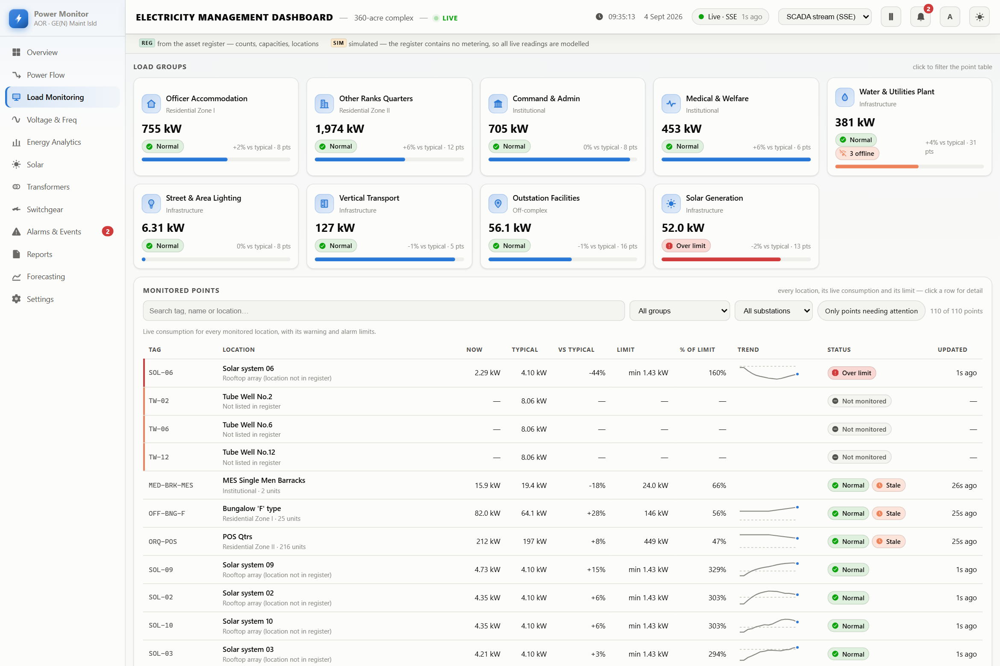
Figure 7.1 — The Load Monitoring screen: nine load-group cards above
the filter row and the point table.
7.1 Purpose
To expose every individual monitored location with its live consumption, its limits, its
trend and its status — searchable, filterable and sortable.
7.2 Why this screen exists
The Overview establishes that something is wrong; this screen establishes exactly what and
where. It is the working surface for anyone investigating a specific asset, and the only screen
presenting all 110 register entries at once.INTERP
7.3 Sections
7.3.1 Load group cards
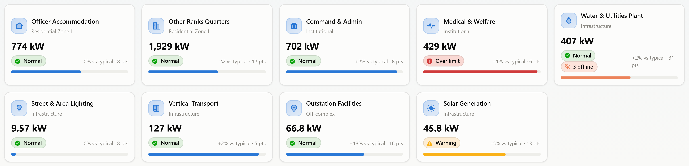
Figure 7.2 — Nine group cards. Each shows the group name and zone,
current demand, a status badge with any offline count, deviation from typical, point count,
and a loading bar.
Purpose
Give a per-group summary and act as a one-click filter for the table below.
Data used
Group roll-ups; worst severity among the group's points; count of points offline.IMPL
Behaviour
Clicking a card filters the table to that group and scrolls to it. Clicking again clears the filter without scrolling.IMPL
Interpretation
Severity and communications state are shown side by side, never one instead of the other — a group holding a critical alarm must not read as merely "offline" because one of its meters is also unreachable.
7.3.2 Filter row
Figure 7.3 — The filter row: free-text search, group selector,
substation selector, an attention-only toggle, and a live result count.
Filters are covered in full in Chapter 15. In summary: all four combine with AND logic, and
the result count updates live.IMPL
7.3.3 The point table
Figure 7.4 — The point table. Rows carry a coloured left edge for
warning, critical or communications state. Unmonitored register entries (TW-02, TW-06, TW-12)
show em-dashes with a "Not monitored" badge rather than zeros.
Column
Unit
Meaning and how it is derived
Tag
—
The point identifier, keyed to the register. Monospaced for scanning.
Location
—
Asset name, with physical location and unit count beneath.
Now
kW
The smoothed current reading. Shows an em-dash if the meter is offline or the point is unmonitored.
Typical
kW
Expected demand for this hour: rated demand × the group's diurnal profile factor.
vs typical
%
Signed deviation: (now ÷ typical) − 1.
Limit
kW
The alarm limit. Prefixed "min" for generation points, where the limit is a floor rather than a ceiling.
% of limit
%
now ÷ limit × 100. The single most scannable column for proximity to alarm.
Trend
—
Sparkline of the last 24 samples with a reference line at typical.
Status
—
Icon, word and colour: Normal, Warning, Over limit, Offline, Bad data, Awaiting data, Not monitored.
Updated
time
Elapsed time since the last reading — the staleness indicator.
Table 7.1 — Point table columns.IMPL
Sorting
Any column heading sorts. The default is severity descending, so problems rise to the top without interaction. Re-sorting is suppressed while the pointer or keyboard focus is inside the table, so rows do not move under the reader.IMPL
What to look for
High % of limit; large positive vs typical; any non-Normal status; an Updated value that has stopped advancing.
7.3.4 Point detail panel
Purpose
Everything known about one location, opened by clicking a row or pressing Enter on it.
Contents
A trend chart with warning, alarm and rated levels drawn as labelled reference lines; fifteen figures including smoothed and unsmoothed values, typical, deviation, rated demand, both limits, percentage of limit, session peak and time, session energy, unit count and unit rating, group, feeding substation, service state and sample count; and that point's own alarm episode history.IMPL
Interpretation
Seeing the limits drawn on the same axes as the trace answers "how close is this to alarming?" without arithmetic.
Accessibility
Opens with focus on the close control; Escape closes.
7.4 How it works
All 110 rows are built once at start-up and thereafter updated in place; filtering toggles
row visibility rather than rebuilding the table. Sorting reorders existing nodes via a document
fragment. This keeps a 110-row table updating once per second without flicker.IMPL
7.5 Practical use case
Following the Overview alarm, an engineer opens this screen, types "tower" into search, and
finds ADM-TWR-C6C7 at 267 kW against a typical of 216 kW — 24% above normal, 109% of its
warning limit. Opening the row shows the trend crossing the warning line about eight minutes ago
and remaining above it. The alarm history shows no prior episode for this point, indicating a new
condition rather than a recurring one.
Chapter 8
Screen Analysis — Voltage & Frequency
Supply quality: whether the electricity arriving is good, as distinct from
how much of it there is.
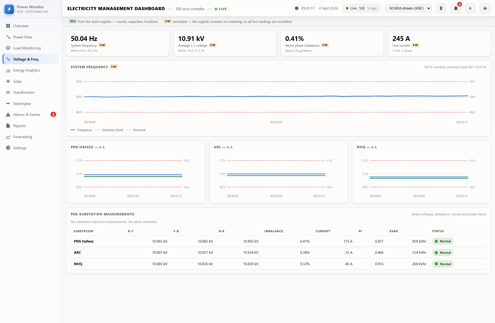
Figure 8.1 — The Voltage & Frequency screen: stat tiles, the
frequency trace, three per-substation voltage charts, and the measurements table.
8.1 Purpose
To present the parameters that describe the quality of supply — frequency,
voltage, phase balance and current — against their statutory limits.
8.2 Why this screen exists
Poor power quality damages equipment and wastes money without ever causing an outage. Voltage
outside band shortens insulation life and overheats motors; sustained phase imbalance destroys
three-phase motors. These conditions are invisible on any consumption view, so they require
their own screen.DOMAIN
8.3 Sections
8.3.1 Stat tiles
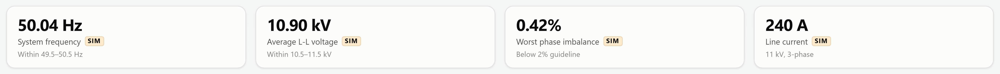
Figure 8.2 — System frequency, average L-L voltage, worst phase
imbalance and line current. Each states whether it lies inside its band.
Worst phase imbalance
Given its own headline because it is the parameter that causes the most expensive damage. Calculated as the maximum deviation of any phase from the three-phase mean, expressed as a percentage of that mean, taken across all three substations. The 2% threshold is a standard guideline.IMPLDOMAIN
8.3.2 System frequency chart
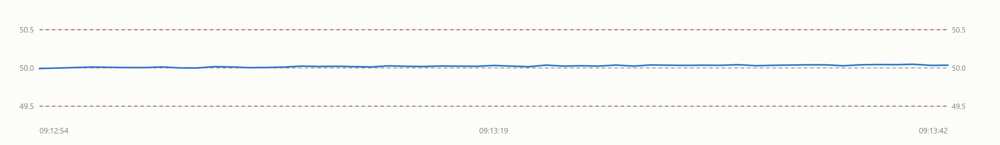
Figure 8.3 — Frequency over time with the 49.5 Hz and 50.5 Hz
statutory limits and the 50.0 Hz nominal drawn as labelled reference lines.
Unit
Hz, two decimal places.
Interpretation
Frequency is a national quantity, not a site one. It reflects whether generation matches demand across the grid. A site cannot influence it; it can only respond to it. Sustained excursion beyond the band is a grid event, not a site fault.DOMAIN
8.3.3 Per-substation voltage charts
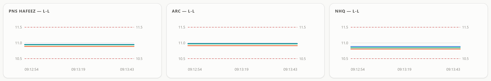
Figure 8.4 — One chart per substation, each showing all three
line-to-line phase voltages against the 10.5–11.5 kV band.
Purpose
Localise a voltage problem to a specific substation rather than only knowing the site average.
Interpretation
Three traces moving together indicate a balanced supply. Traces separating indicate imbalance at that substation specifically.
8.3.4 Measurements table
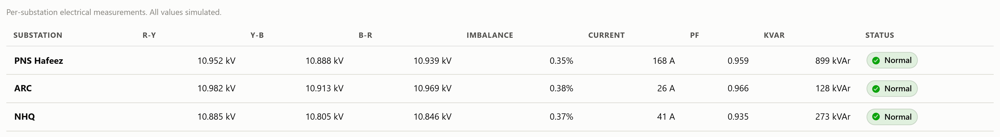
Figure 8.5 — Per-substation electrical measurements: all three phase
voltages, imbalance, current, power factor and reactive power.
Column
Unit
Meaning
R-Y, Y-B, B-R
kV
The three line-to-line phase voltages, three decimal places.
Imbalance
%
Maximum phase deviation from the mean, as a percentage of the mean.
Current
A
Line current derived from power, voltage and power factor.
PF
—
Power factor at that substation, three decimals.
kVAr
kVAr
Reactive power drawn through that substation.
Status
—
Normal when voltage is in band and imbalance is below 2%; otherwise Check.
Table 8.1 — Measurements table columns.IMPL
8.4 Practical use case
A maintenance supervisor reports repeated motor failures in one zone. This screen shows the
substation feeding that zone running at 2.4% imbalance while the other two sit near 0.9%. That
points to unequal single-phase loading on that substation — a wiring distribution problem
rather than a motor-quality problem, and one that will keep destroying motors until the loading
is rebalanced.
Chapter 9
Screen Analysis — Energy Analytics
The shift from power to energy — from what is happening now to what
has accumulated. This is the screen for cost conversations.
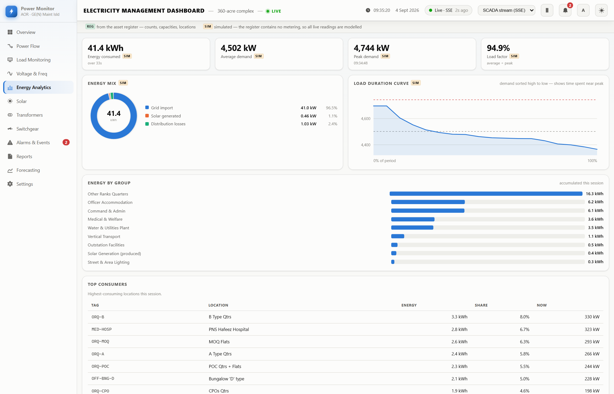
Figure 9.1 — The Energy Analytics screen: stat tiles, energy mix,
load-duration curve, energy by group, and top consumers.
9.1 Purpose
To show how much energy has been consumed, how it divides between import, generation and
losses, how peaky the demand profile is, and which locations dominate consumption.
9.2 Why this screen exists
Electricity is billed on energy, and frequently on peak demand as well. Every other screen
deals in instantaneous power; this one deals in the quantities that appear on an invoice and in
a reduction target.DOMAIN
9.3 Sections
9.3.1 Stat tiles
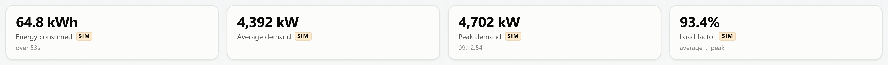
Figure 9.2 — Energy consumed with elapsed period, average demand,
peak demand with its timestamp, and load factor.
Average demand
Energy consumed ÷ elapsed hours — the mean power over the period, not a mean of samples.IMPL
Load factor
(Average demand ÷ peak demand) × 100. Stated on the tile as "average ÷ peak".IMPL
9.3.2 Energy mix
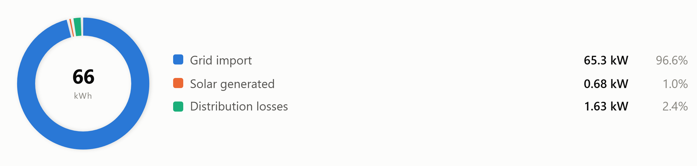
Figure 9.3 — Total energy divided into grid import, solar generation
and distribution losses.
Calculation
Grid import = consumed − solar generated; the three segments are import, solar and losses.IMPL
Interpretation
The losses segment is energy paid for but never used. Solar directly displaces import.
9.3.3 Load-duration curve
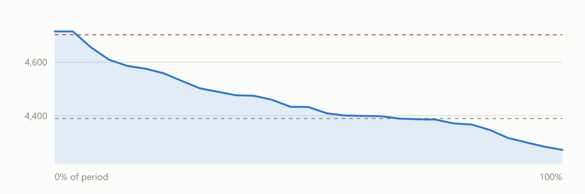
Figure 9.4 — Demand sorted from highest to lowest rather than by
time, with peak and average marked as reference lines.
Purpose
Answer a question an ordinary trend cannot: what proportion of the period is spent near peak?
X-axis
Percentage of the period, 0% to 100% — not time of day.
Y-axis
Demand in kW.
Interpretation
A steep drop at the left means peaks are brief and rare, so peak-shaving would yield large savings for little disruption. A flat curve means demand is steady and the peak charge is unavoidable without reducing base load.DOMAIN
Why this chart type
It is the standard instrument for peak-demand analysis in energy management, and it is the only chart on the dashboard where the x-axis is not time.
9.3.4 Energy by group
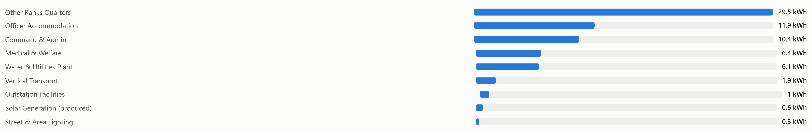
Figure 9.5 — Accumulated energy per asset group, ranked. The
generation group is labelled "(produced)" and reported positive.
9.3.5 Top consumers
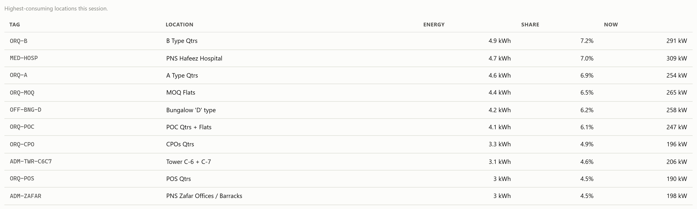
Figure 9.6 — The ten highest-consuming individual locations, with
each one's share of site total and its current draw.
Purpose
Identify where consumption-reduction effort produces the largest return.
Calculation
Share = point energy ÷ site energy × 100. Generation points are excluded.IMPL
Interpretation
Expect large aggregate tags (MOQ Flats, B Type Qtrs) to dominate, because each represents hundreds of dwellings. A single-unit tag appearing high in this list is the more interesting signal.
9.4 Practical use case
A facilities manager is asked to cut electricity cost by 10%. The load-duration curve shows a
steep left-hand drop — demand is near peak for only a small share of the period — so
peak-shaving is worth pursuing. Top consumers shows the two largest residential tags accounting
for roughly a third of site energy, so tariff or behavioural measures there will move the total
more than any plant-side intervention.
Chapter 10
Screen Analysis — Solar
The only screen concerned with electricity being produced rather than
consumed.
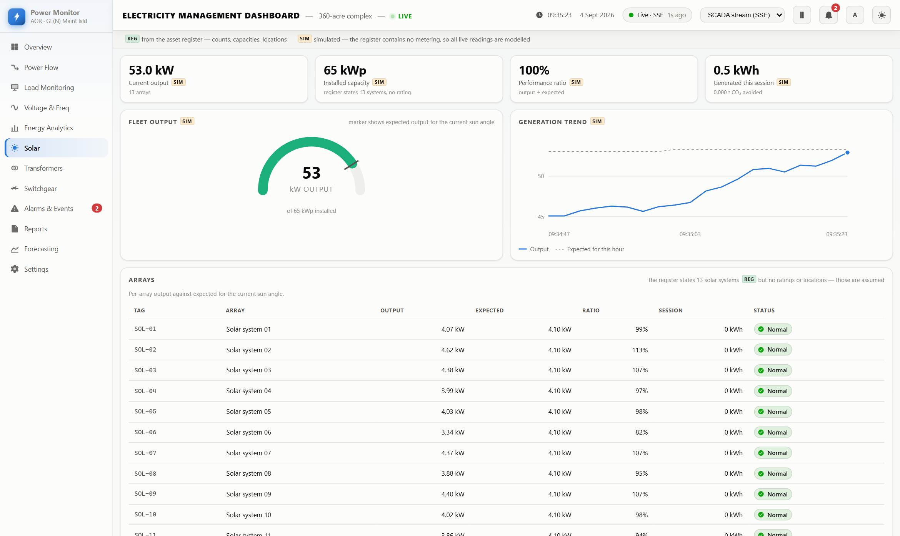
Figure 10.1 — The Solar screen: stat tiles, fleet output gauge,
generation trend, and the per-array table.
10.1 Purpose
To report generation from the 13 solar systems and, critically, to judge that output against
what the current sun angle should produce rather than against a fixed target.
10.2 Why this screen exists
Solar output varies legitimately by an order of magnitude through the day. A raw output figure
therefore cannot distinguish a healthy array at dawn from a failed array at noon. Only a ratio
against expected output can, which is why this screen is built around performance ratio rather
than kW.DOMAIN
10.3 Sections
10.3.1 Stat tiles
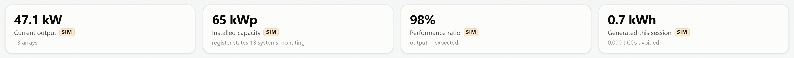
Figure 10.2 — Current output, installed capacity, performance ratio,
and session generation with CO₂ avoided. Note the installed-capacity caption records that
the register states 13 systems but gives no rating.
Performance ratio
Output ÷ expected × 100, computed only when expected exceeds 0.5 kW; below that the ratio is meaningless and an em-dash is shown.IMPL
CO₂ avoided
Session solar energy × 0.42 kg/kWh, reported in tonnes.IMPL
10.3.2 Fleet output gauge
Figure 10.3 — Output against installed capacity. The tick mark on the
arc is expected output for the current sun angle; the caption states the installed total.
The gauge should normally read well below full scale — full scale is peak capacity in
ideal sun. The meaningful comparison is between the fill and the tick mark, not between the fill
and the end of the arc.
10.3.3 Generation trend
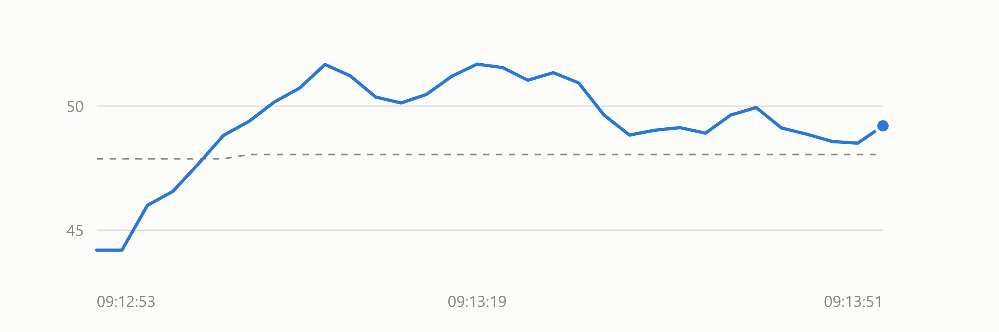
Figure 10.4 — Fleet output over time against expected output. The two
traces should track; a persistent gap indicates fleet-wide under-performance.
Implementation note
The trend is derived by scaling one array's history by the number of arrays, rather than by
summing all thirteen histories. The shape is representative and the magnitude is correct in
aggregate, but it will not reflect divergence between individual arrays. Per-array divergence
is visible in the table beneath instead.IMPL
10.3.4 Array table
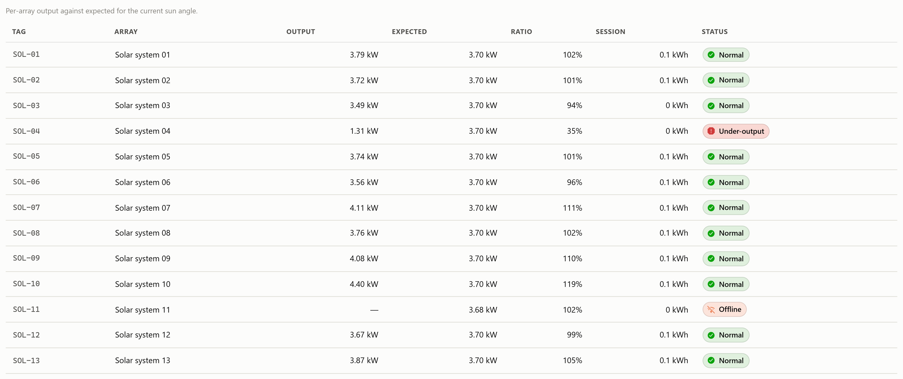
Figure 10.5 — All thirteen arrays with output, expected, ratio,
session energy and status.
Column
Unit
Meaning
Tag / Array
—
SOL-01 to SOL-13 and the array name.
Output
kW
Current generation; em-dash when offline.
Expected
kW
Rated capacity × the solar profile factor for the current hour.
Ratio
%
Output ÷ expected. The diagnostic column.
Session
kWh
Energy generated since monitoring began.
Status
—
Normal, Low (below 60% of expected), Under-output (below 35%), or Offline.
Table 10.1 — Array table columns.IMPL
Under-output limits are evaluated only during daylight, defined as solar profile factor above
0.2. Outside that window the limits are suspended entirely, so no array alarms overnight for the
crime of darkness.IMPL
10.4 Practical use case
At midday the fleet reads 41 kW against 58 kW expected — a 71% performance ratio. The
array table shows twelve arrays near 95% and SOL-07 at 12%, flagged Under-output. The problem is
one array, not the fleet: shading, soiling or an inverter fault at that location.
Chapter 11
Screen Analysis — Transformers
The only screen containing no simulated values whatsoever.
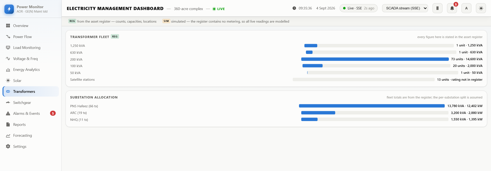
Figure 11.1 — The Transformers screen: fleet composition by unit
size, and allocation across the three substations.
11.1 Purpose
To document the transformer fleet: how many units of each rating exist, and how installed
capacity distributes across the substations.
11.2 Why this screen exists
Transformer capacity is the ceiling on everything else. Every loading percentage elsewhere on
the dashboard is computed against these figures, so they warrant their own screen. It is also
the screen to use when every displayed number must be defensible — nothing here is
modelled.IMPL
11.3 Sections
11.3.1 Transformer fleet
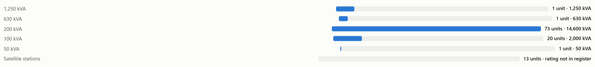
Figure 11.2 — Fleet by unit rating. Satellite stations appear with
their count and an explicit note that the register gives no rating for them.
Rating
Units
Total kVA
Source
1,250 kVA
1
1,250
Register
630 kVA
1
630
Register
200 kVA
73
14,600
Register
100 kVA
20
2,000
Register
50 kVA
1
50
Register
Satellite stations
13
not stated
Register (count only)
Total
109
18,530
Reconciles exactly
Table 11.1 — Transformer fleet. Both the unit count and the
installed kVA reconcile exactly to the totals stated in the source document; this is asserted by
the verification script on every run.IMPL
11.3.2 Substation allocation
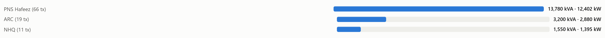
Figure 11.3 — Installed kVA and usable kW per substation. The card
subtitle states that fleet totals are from the register while the split between substations is
assumed.
Substation
Units
Installed kVA
Usable kW
Rated demand
Utilisation
PNS Hafeez
66
13,780
12,402
5,013
40%
ARC
19
3,200
2,880
1,062
37%
NHQ
11
1,550
1,395
741
53%
Satellite
13
not stated
—
100
—
Table 11.2 — Substation allocation. Usable kW = installed kVA
× 0.9 assumed power factor. Utilisation figures are typical distribution-transformer
loadings.IMPL
Verified fact and stated assumption, side by side
Verified: 109 units and 18,530 kVA are stated in the register and reconcile
exactly. Assumed: which units sit at which substation. The register does not say. The
allocation used was chosen so that each substation's utilisation lands in a realistic band, and
it still sums exactly to the documented fleet. It must be corrected from the site single-line
diagram before being relied upon.IMPL
Chapter 12
Screen Analysis — Switchgear
The protective equipment between supply and load.
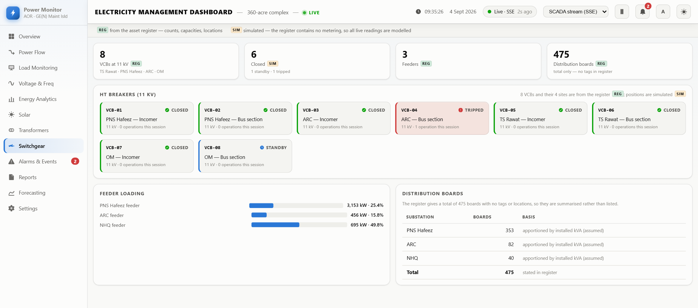
Figure 12.1 — The Switchgear screen: stat tiles, the HT breaker
status grid, feeder loading, and the distribution-board summary.
12.1 Purpose
To show the state of the circuit breakers protecting the network, and to summarise the
distribution-board population.
12.2 Why this screen exists
Breaker position is the first thing an engineer checks when a section of a site loses supply.
A tripped breaker is both the symptom and the location of a fault.DOMAIN
12.3 Sections
12.3.1 Stat tiles
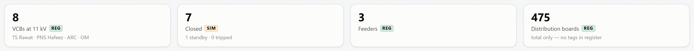
Figure 12.2 — VCB count with the four register-named sites, position
summary, feeder count, and distribution-board total. Three of the four carry REG
badges.
12.3.2 HT breaker grid
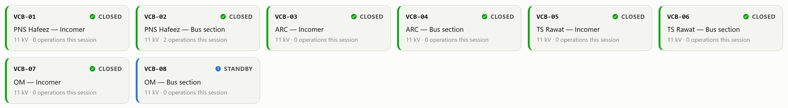
Figure 12.3 — The eight 11 kV breakers, one card each, showing
identifier, site and role, position, rating and operation count.
Position
Meaning
Closed
Normal operating state — the breaker is carrying power.
Standby
Deliberately open and healthy, available as a spare path.
Open
Open by intent, for example during maintenance.
Tripped
Opened automatically in response to a fault. Requires investigation.
Table 12.1 — Breaker positions.IMPL
Provenance of this section
The register states "VCBs HT 11 KV — 8 Nos — (TS Rawat, PNS Hafeez, ARC &
OM)". The count and the four site names are therefore real. Splitting them into
incomer/bus-section pairs is an assumption, because the document names the sites without stating
what each breaker does. Positions are simulated entirely; the register records no breaker
state.IMPL
12.3.3 Distribution boards
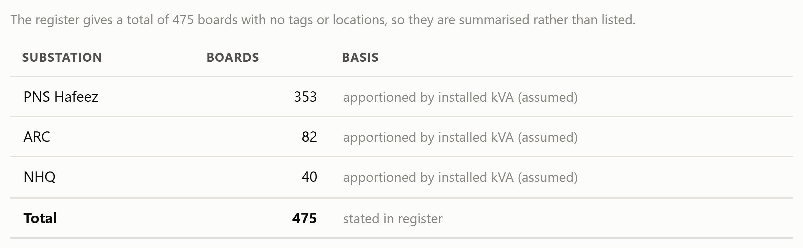
Figure 12.4 — The 475 boards summarised by substation, each row
stating its basis, with the register total shown for reconciliation.
The boards are deliberately summarised rather than listed. The register gives
a total of 475 with no names, tags or locations; generating 475 individual board entries would
imply a level of detail the source document does not contain. The apportionment shown is by
installed kVA and each row says so.IMPL
12.4 Practical use case
A zone reports loss of supply. This screen shows VCB-03 (ARC incomer) reading Tripped with one
operation this session. The fault is localised immediately to the ARC incomer, and the operation
count distinguishes a single event from repeated tripping.
Chapter 13
Screen Analysis — Alarms & Events
Everything currently wrong, and a permanent record of everything that has
been wrong.
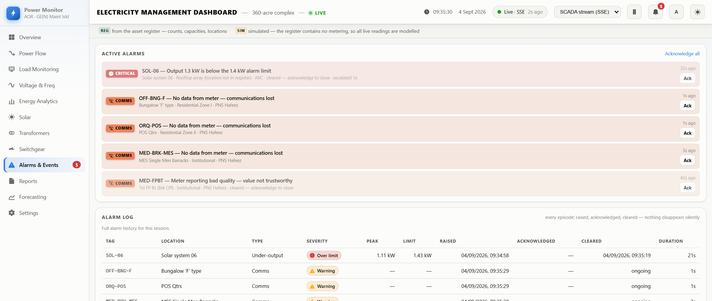
Figure 13.1 — The Alarms & Events screen: the full active list
above the complete alarm log.
13.1 Purpose
To hold the complete alarm state and history, with the timestamps needed to answer post-incident
questions.
13.2 Why this screen exists
The Overview shows active alarms but is space-constrained and holds no history. After any
incident the question asked is not "what is wrong now?" but "when did we know, and how quickly
did we respond?" — which requires a durable record.INTERP
13.3 Sections
13.3.1 Active alarms
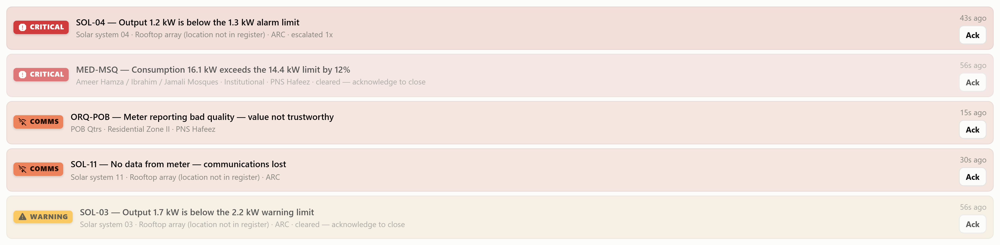
Figure 13.2 — The active list, uncapped in height, with an
"Acknowledge all" control.
13.3.2 Alarm log
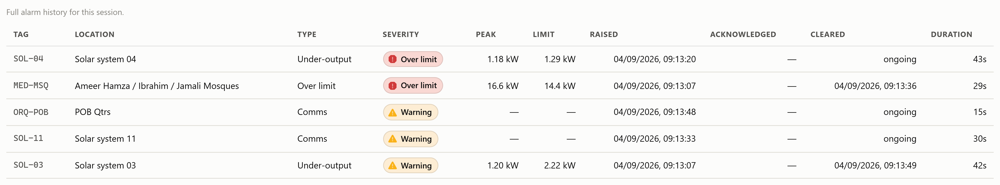
Figure 13.3 — The alarm log. Every episode with its three
timestamps and duration.
Column
Meaning
Tag / Location
The affected point and its name.
Type
Over limit (consumption), Under-output (generation), or Comms (communications loss).
Severity
The highest severity the episode reached, not its severity now.
Peak
The most extreme value during the episode — maximum for high alarms, minimum for low.
Limit
The limit that was breached, in kW.
Raised / Acknowledged / Cleared
The three timestamps. Acknowledged is blank if never acknowledged; Cleared reads "ongoing" while active.
Duration
Cleared time minus raised time, or elapsed time if still active.
Table 13.1 — Alarm log columns.IMPL
The log retains up to 500 closed episodes in memory. It is not persisted:
reloading the page clears it. Export to CSV from the Reports screen before reloading if a record
is required.IMPL
13.4 Practical use case
A monthly review asks how many limit exceedances occurred and how promptly they were handled.
The log gives episode count by type and severity, and the gap between Raised and Acknowledged
gives the response time for each.
Chapter 14
Screen Analysis — Reports, Forecasting & Settings
The final three screens: period reporting, demand projection, and the
provenance record.
14.1 Reports
14.1.1 Purpose and rationale
To present period totals and export the underlying data. This screen serves management rather
than operations: the audience wants the trend and the numbers, not the moment.
14.1.2 Session summary
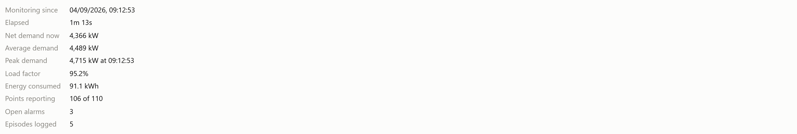
Figure 14.1 — Ten session figures, with CSV export controls beneath.
Monitoring start, elapsed time, demand now, average demand, peak demand with timestamp, load
factor, energy consumed, points reporting, open alarms, and episodes logged.IMPL
Table 14.1 — CSV export schemas. Note that estimated fields are
named as such in the column headings, so the distinction survives export into a
spreadsheet.IMPL
14.1.4 Charts
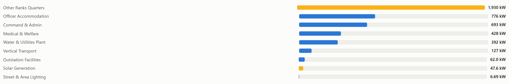
Figure 14.2 — Consumption by group, ranked, with alarm-holding groups
coloured.
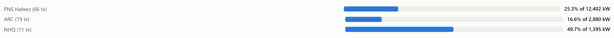
Figure 14.3 — Substation utilisation against installed capacity, with
transformer counts. Amber above 80%, red above 90%.
14.2 Forecasting
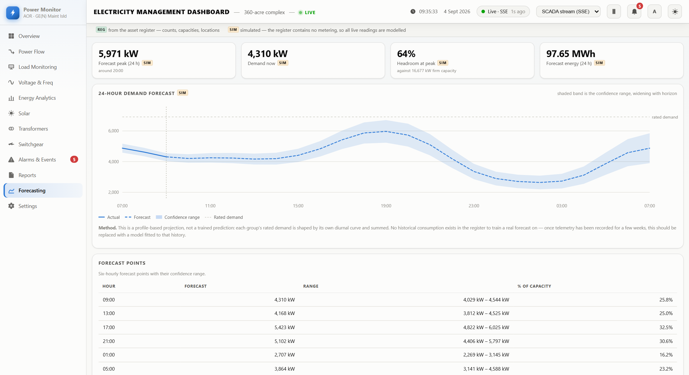
Figure 14.4 — The Forecasting screen: stat tiles, the 24-hour band
chart, the method note, and the forecast-points table.
14.2.1 Purpose and rationale
To project demand over the coming 24 hours so peaks can be anticipated and capacity headroom
assessed in advance.
14.2.2 Stat tiles
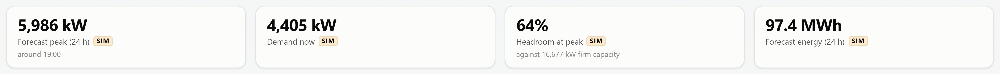
Figure 14.5 — Forecast peak with approximate hour, demand now,
headroom at peak, and forecast 24-hour energy.
Headroom = (firm capacity − forecast peak) ÷ firm capacity × 100, where
firm capacity is the sum of the three substations' usable kW.IMPL
14.2.3 Forecast chart
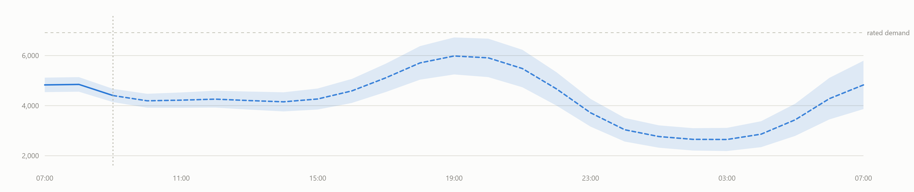
Figure 14.6 — Solid line to the left of the marker is actual; dashed
to the right is forecast. The shaded band is the confidence range, widening with horizon.
X-axis
Clock hour, from two hours before now to 22 hours ahead.
Y-axis
Demand in kW, with rated demand marked as a reference.
Band
±6% at the current hour, widening linearly to ±20% at the far horizon.IMPL
Method — stated on the screen itself
This is a profile-based projection, not a trained prediction. Each asset
group's rated demand is shaped by its own diurnal curve and the results summed. No historical
consumption exists in the register to train a statistical model on. Once several weeks of real
telemetry have been recorded, this should be replaced with a model fitted to that history. The
dashboard prints this caveat directly beneath the chart.IMPL
14.2.4 Forecast points table
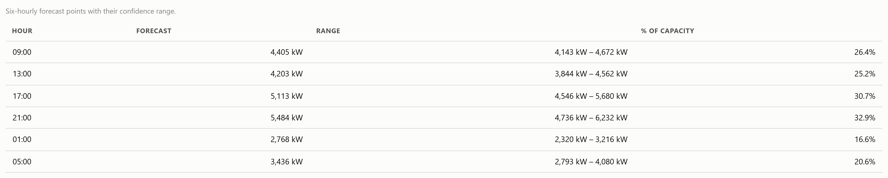
Figure 14.7 — Six-hourly forecast values with confidence ranges and
each as a percentage of capacity.
14.3 Settings
Figure 14.8 — The full provenance statement: what came from the
register, what is estimated, and what is simulated.
This screen carries no controls. It exists to hold the provenance statement and the register
gap list in a permanent location — the screen to open if a figure is challenged. Display
preferences (theme, density, source) live in the header rather than
here.IMPL
14.3.1 Practical use case
During a review a stakeholder questions the 16.7 MW connected-capacity figure. Settings shows
it derives from 18,530 kVA of installed transformer capacity stated in the register, converted at
an assumed 0.9 power factor — and that the per-substation split is an assumption while the
total is not.
Chapter 15
Filters & Controls
Every interactive control in the interface: what it changes, why it
exists, and how it should be used.
15.1 Data filters (Load Monitoring)
Control
Type
Behaviour
Search
Free text
Case-insensitive substring match across tag, asset name and location. Typing "tube" returns all 14 tube wells; "MR-III" returns everything at that location regardless of asset type. Affects the point table only.IMPL
Group filter
Dropdown
Restricts the table to one of the nine asset groups. Kept in sync with the group cards: clicking a card sets this dropdown.
Substation filter
Dropdown
Restricts to points fed by one substation. Useful when a substation-level problem is suspected and the affected loads must be identified.
Only points needing attention
Toggle
Hides everything whose severity is Normal and whose quality is good. Reduces 110 rows to only those in warning, over limit, offline or bad-quality state. Re-evaluated continuously, so a point entering alarm appears without interaction.IMPL
Result count
Readout
Live "n of 110 points" so the effect of the active filter combination is always visible.
Table 15.1 — Data filters. All four combine with AND logic.IMPL
What these filters do not do
There is no date filter and no time-range selector anywhere in the
dashboard. All views are live plus session history held in memory. Historical range selection
would require a historian, which the implementation does not have. This is a genuine functional
limitation, not an omission from this report.IMPL
15.2 Table sorting
Every column heading in the point table is a sort control. First click sorts descending for
numeric columns and ascending for text; a second click reverses. The active column is marked with
an arrow and aria-sort for assistive technology.IMPL
Default sort is by severity descending, so the worst condition is always at the top on arrival.
Automatic re-sorting is suspended while the pointer or keyboard focus is inside the table, so rows
never move while being read.
15.3 Navigation controls
Control
Behaviour
Sidebar items
Switch the displayed screen. Only the visible screen renders; the choice is remembered in localStorage and restored on the next visit.IMPL
Alarm bell
Jumps directly to Alarms & Events. Carries a badge with the unacknowledged count.
Group cards
Act as filters: select a group and scroll to the table. Clicking the selected card clears the filter without scrolling.
Table rows
Open the point detail panel. Keyboard-reachable; Enter or Space opens, Escape closes.
15.4 Data-source and feed controls
Control
Behaviour
Source selector
Switches between Simulator (in-browser generation), SCADA stream (SSE) and SCADA poll (REST) at runtime without reload. This is the control that moves the dashboard onto real data.IMPL
Pause / resume
Stops the feed so a value can be read or discussed without moving. The connection pill changes to Paused so a paused dashboard is never mistaken for a live one.
Acknowledge
Per-alarm button recording that an operator has seen the condition. The timestamp enters the alarm log.
Acknowledge all
Acknowledges every open alarm in one action. Disabled when nothing is unacknowledged.
CSV export
Two buttons on Reports generating point and alarm exports client-side; no server round trip.
15.5 Display controls
Control
Behaviour
Theme toggle
Switches light and dark palettes, each a separately chosen set of colour steps rather than an inversion. Persisted.IMPL
Display density (A)
Increases the root font size from 15 px to 18 px and widens spacing, for a wall-mounted screen read from a distance. Persisted.
Chapter 16
KPI & Metrics Reference
The six headline KPIs documented in full, followed by a complete reference
table covering every remaining metric in the interface.
16.1 The six headline KPIs
Total Active Power
Definition
The rate at which the site is consuming useful electrical energy at this instant.
Simple
How fast the whole site is using electricity right now — the speedometer, not the odometer.
Technical
Real power: the component of supplied power performing actual work, as opposed to reactive power which circulates without doing work.
Unit
MW on the tile; kW in the sub-line. 1 MW = 1,000 kW.
Purpose
The single most important operational number — the basis of capacity and cost.
Why included
Every other consumption figure is a subdivision of this one.
Data source
Sum of smoothed readings across all monitored non-generation points.IMPL
Calculation
site.kw = Σ smoothed kW of all load points
Example
4,526 kW displays as 4.53 MW.
Interpretation
Typical 3,000–5,500 kW depending on hour. Judge against typical for this hour, not against a fixed threshold — 4,500 kW is normal at 20:00 and abnormal at 04:00.
Relationships
Integrated over time gives Energy. Divided by voltage and power factor gives Current. Combined with reactive power gives apparent power.
Reactive Power
Definition
Power that oscillates between source and load without performing net work.
Simple
Electricity that sloshes back and forth. Motors and transformers need it to build magnetic fields, but it does no useful work and still occupies cable capacity.
Technical
The imaginary component of complex power, arising from the phase displacement between voltage and current in inductive loads.
Unit
MVAR on the tile (megavolt-ampere reactive); kVAr per substation.
Purpose
High reactive power means cables and transformers carry current that produces nothing, and utilities commonly penalise it.
Data source
Derived from real power and power factor per substation, then summed.IMPL
Calculation
Q = P × tan(arccos(PF)) per substation; site total is the sum.
Example
P = 3,319 kW at PF 0.95 gives Q = 3,319 × tan(arccos 0.95) = 1,091 kVAr.
Interpretation
Rises as power factor falls. Typically 25–35% of real power on a motor-heavy site. A sharp rise with no corresponding rise in real power indicates increased inductive load or failing power-factor correction.
Relationships
Directly determined by power factor; combines with real power to give apparent power.
Power Factor
Definition
The ratio of real power to apparent power — how efficiently supplied power is converted into useful work.
Simple
A score from 0 to 1. 1.0 means every unit supplied does useful work. 0.8 means a fifth of the capacity is wasted moving reactive power around.
Technical
The cosine of the phase angle between voltage and current waveforms.
Unit
Dimensionless, 0 to 1. Displayed to three decimal places.
Purpose
Improving power factor is frequently the cheapest available saving on an industrial site.
Data source
Computed site-wide from real and apparent power.IMPL
Calculation
PF = P ÷ S where S = √(P² + Q²)
Example
P = 4,526 kW, Q = 1,420 kVAr gives S = 4,744 kVA and PF = 0.954.
Interpretation
Above 0.95 good. 0.90–0.95 acceptable. Below 0.90 usually attracts a penalty and the tile shows a warning. Falls as motor load rises — a normal daily variation, not a fault.
Relationships
Governs reactive power and current. For the same real power, a lower power factor means more current and higher losses.
Frequency
Definition
The rate at which alternating current reverses direction.
Simple
How many times per second the electricity changes direction. It must stay very close to 50 — it is a live indicator of whether national generation is keeping up with national demand.
Technical
The fundamental frequency of the supply waveform, determined by the rotational speed of synchronous generators across the interconnected grid.
Unit
Hz (hertz), two decimal places.
Purpose
Sensitive equipment and motor speeds depend on it; sustained excursion signals grid instability.
Data source
Modelled as a slow wander about 50 Hz, identical at every bus because frequency is a system-wide quantity.IMPL
Calculation
f = clamp(50 + 0.045·sin(φ) + noise, 49.7, 50.3)
Interpretation
Statutory band 49.5–50.5 Hz. Below 49.5 means demand exceeds generation nationally; above 50.5 the reverse. A site cannot influence this, only respond to it.DOMAIN
Relationships
Independent of site load. Unlike every other KPI, it reports on the grid rather than on the site.
Average Voltage (L-L)
Definition
Mean line-to-line voltage across the three substations.
Simple
The electrical "pressure" pushing current through the wires. Too low and motors overheat; too high and insulation degrades.
Technical
RMS potential difference between any two of the three phase conductors, averaged across the phases and then across the substations.
Unit
kV (kilovolts), two decimal places. Nominal 11 kV.
Purpose
Out-of-band voltage shortens equipment life without ever causing an outage.
Data source
Derived per bus with a load-dependent droop and a small independent per-phase offset, then averaged.IMPL
Phases at 10.962, 10.905 and 10.875 kV average to 10.91 kV — within band.
Interpretation
Band 10.5–11.5 kV (±4.5%). Voltage falling as load rises is normal droop. Voltage below band at high load indicates an undersized or overloaded supply path.
Relationships
Falls as loading rises; determines current for a given power; underpins the phase-imbalance calculation.
Energy Today
Definition
Total electrical energy consumed since monitoring began.
Simple
The odometer to Total Active Power's speedometer. This is what an electricity bill charges for.
Technical
The time integral of real power over the measurement period.
Unit
kWh below 1,000, MWh above. 1 MWh = 1,000 kWh.
Purpose
The billing quantity and the basis of any consumption-reduction target.
Data source
Accumulated on every ingest from smoothed power and elapsed time.IMPL
Calculation
E += P × Δt ÷ 3,600,000 with Δt in milliseconds, rejecting gaps over 60 s.
The reference that makes a raw reading meaningful.
vs typical
%
(Now ÷ typical) − 1
Large sustained positive deviation is the investigation trigger.
% of limit
%
(Now ÷ alarm limit) × 100
Proximity to alarm. The most scannable column in the table.
Rated demand
kW
Unit count × estimated unit kW
Estimated. Every limit derives from it.
Warning limit
kW
Rated + (alarm − rated) × 0.55
Early notice, set between rated and alarm.
Alarm limit
kW
Rated × group headroom (1.15–1.40)
The consumption limit proper.
Performance ratio
%
(Solar output ÷ expected) × 100
Distinguishes a dawn array from a failed one.
Headroom at peak
%
(Capacity − forecast peak) ÷ capacity × 100
Whether new load can be connected.
Forecast confidence
kW
v × (1 ± (0.06 + horizon×0.14))
±6% now widening to ±20% at 22 h.
Alarm rate context
count
Open episodes; unacknowledged count
Drives the nav badge and bell.
Table 16.1 — Complete metrics reference. All formulas verified
against the implementation.IMPL
Chapter 17
Technical Terminology
The terms and abbreviations appearing in the interface, each explained
first in plain language and then technically. Only terms actually present in the dashboard
are included.
17.1 Power and energy terms
kW — kilowatt
Simple: a measure of how fast electricity is being used. A domestic kettle draws about
2 kW. Technical: one thousand watts; the SI unit of power, being energy transfer per unit
time. Unit of: power. Measured: in this implementation, reported per point by the
feed and summed. Why it matters: it is the fundamental quantity every consumption figure
is built from. Interpretation: a rate, not a quantity — meaningful only at an
instant. Example: a tube well pump drawing 15 kW.
MW — megawatt
Simple: one million watts, used because site totals in kW become unwieldy.
Technical: 1 MW = 1,000 kW. Why it appears: the KPI tiles display site totals in MW
for legibility while retaining kW in the sub-line. Example: 4,526 kW shown as 4.53 MW.
kWh — kilowatt-hour
Simple: the amount of electricity used, as opposed to how fast. One kilowatt sustained
for one hour. Technical: a unit of energy equal to 3.6 megajoules. Formula:
E (kWh) = P (kW) × t (h). Why it matters: this is the billing unit.
Interpretation: always increasing; its rate of increase is average power. Example:
a 10 kW pump running 5 hours consumes 50 kWh.
MWh — megawatt-hour
1,000 kWh. The dashboard switches automatically from kWh to MWh above 1,000 kWh to keep the
displayed figure readable.IMPL
kVA and MVA — kilovolt-ampere
Simple: the total electrical load a cable or transformer must physically carry,
including the part that does no useful work. Technical: apparent power, the vector sum of
real and reactive power. Formula: S = √(P² + Q²). Why it appears:
transformers are rated in kVA, so all capacity figures in the register are in kVA.
Example: the site's 109 transformers total 18,530 kVA.
kVAr and MVAR — reactive volt-ampere
Simple: the portion of power that does no work but is still required by motors and
transformers. Technical: the imaginary component of complex power.
Formula: Q = P × tan(arccos PF). Interpretation: the lower the power factor,
the higher this is for the same useful output.
17.2 Supply quality terms
V, kV — volt, kilovolt
Simple: electrical pressure. Technical: potential difference. In this
system: 11 kV high-tension distribution — evidenced by the register's "VCBs HT 11 KV"
entry — stepped down to 400 V for buildings.IMPL
L-L — line-to-line
Voltage measured between two phase conductors rather than between one phase and earth. The
standard way to quote three-phase voltage, which is why the dashboard labels its voltage figures
"L-L".
A — ampere
Simple: how much electricity is flowing. Technical: the SI unit of current.
Formula used: I = P ÷ (√3 · V · PF) for a three-phase system.
Why it matters: cables are sized by current; exceeding their rating overheats them.
Hz — hertz
Simple: cycles per second. Technical: the supply's fundamental frequency,
nominally 50 Hz in this region. Interpretation: a grid-level quantity that a site
observes rather than controls.
PF — power factor
Covered fully in Chapter 16. In brief: the ratio of useful power to total supplied power,
between 0 and 1.
R-Y, Y-B, B-R — phase pairs
Simple: industrial supply uses three live conductors, coloured Red, Yellow and Blue.
These three labels are the three possible pairings between them. Technical: the three
line-to-line voltage measurements of a three-phase system. Why they appear: the voltage
profile plots all three so imbalance between them is visible.
Phase imbalance
Simple: the three phases carrying noticeably different loads. Formula: maximum
phase deviation from the mean, divided by the mean. Why it matters: sustained imbalance
overheats and destroys three-phase motors. Interpretation: below 2% acceptable.
17.3 Network terms
HT / LT — high tension / low tension
High-voltage distribution (11 kV here) and low-voltage final distribution (400 V). Electricity
travels at high voltage because losses fall as voltage rises for the same power. The register
records 38 km of HT and 108 km of LT cable.IMPL
Substation
Where high voltage is received and stepped down for local distribution. Three exist:
PNS Hafeez, ARC and NHQ, plus 13 satellite stations serving outstations.
Transformer
Simple: the device that changes voltage from high to low. Technical: a static
machine coupling two windings by a magnetic field. Rated in: kVA. Example: a
200 kVA unit carries roughly 180 kW of real load at 0.9 power factor.
Feeder
A cable circuit carrying power from a substation to a group of loads. The register states
three feeders; the dashboard models one per substation.
Busbar
The heavy conductor inside a substation to which everything connects — the common
junction between incoming supply and outgoing feeders. Drawn as the horizontal line on the
single-line diagram.
VCB — vacuum circuit breaker
Simple: an automatic switch that disconnects a circuit when something goes wrong.
Technical: a breaker interrupting current within a vacuum chamber, which extinguishes the
arc cleanly; standard at medium voltage. In this system: eight units at 11 kV across four
register-named sites.IMPL
DB — distribution board
The panel of protective devices inside a building splitting incoming supply into final
circuits — a domestic consumer unit, scaled up. The register records 475 with no further
detail.
SLD — single-line diagram
The standard engineering drawing of an electrical network, representing each three-phase
circuit as one line. Universally read by electrical engineers, which is why the dashboard uses
this form rather than a generic chart.
Solar PV / kWp
Photovoltaic panels generating electricity from sunlight. kWp is "kilowatt peak" —
output under full reference sun. The register states 13 systems but gives no
ratings.IMPL
17.4 Load and capacity terms
Load
Any device or group of devices consuming electricity; also the amount consumed. The dashboard
uses it in both senses — "load group" (the devices) and "site load" (the amount).
Demand
Power drawn at a given moment. Essentially interchangeable with load in this context.
Peak demand
The highest demand reached in a period. Commercially significant because utilities frequently
levy a charge based on it, independent of total energy.DOMAIN
Connected load vs demand
Connected load is the total that could be switched on at once; demand is what is
actually drawn. Connected capacity here is 16.7 MW while typical demand is around 4.5 MW.
Diversity
The reason for that gap. Across 2,157 buildings, not everything runs simultaneously, so the
real total sits far below the theoretical maximum. This is why networks are not sized to
connected load.DOMAIN
Capacity / firm capacity
The load the network can carry safely and continuously, derived here from installed
transformer kVA at an assumed 0.9 power factor.
Utilisation
Load as a percentage of capacity. Distribution transformers typically run at 30–60%.
Load profile
The characteristic shape of demand across a day. Residential load peaks in the evening; office
load at midday; street lighting runs only at night. Each asset group in the register carries its
own profile.IMPL
Generation
Electricity produced on site rather than imported. Here this means solar only — the
register records no generators of any kind.IMPL
17.5 Monitoring and alarm terms
SCADA
Full form: Supervisory Control and Data Acquisition. Simple: the standard family
of industrial systems that collect readings from field equipment and present them centrally.
In this system: the dashboard is designed to sit on top of one; the reference server
emulates its data interface.
Tag / Point ID
The unique code identifying one monitored location, such as TW-01 or
MED-HOSP. Everything keys off it: readings, limits, alarms and history.
Telemetry
Measurements transmitted automatically from remote equipment, as opposed to manual reading.
SSE — server-sent events
A one-way streaming protocol over HTTP in which the server pushes updates as they occur. Used
in preference to polling because it is lower-latency and lighter on both ends.
REST polling
The alternative: the client requests the current readings on a fixed interval. Simpler for a
gateway to implement, at the cost of latency.
EMA — exponential moving average
Simple: a smoothing method weighting recent readings more heavily than older ones.
Formula: α = 1 − e−Δt/τ, then
value = previous + α(new − previous), with τ = 6 s.
Why it matters: raw sensor jitter would otherwise read as plant
instability.IMPL
Data quality states
Deliberately a separate axis from severity. Good — fresh sample. Pending
— not heard from yet at start-up, explicitly not an alarm. Stale — over 15 s
old. Offline — over 40 s old; raises a communications alarm. Bad — the
meter reported bad quality, and limits are not evaluated on
it.IMPL
Alarm handling terms
Term
Meaning in this implementation
On-delay
A limit must be exceeded continuously for 6 s before an alarm raises, so a single noisy sample cannot trip it.
Hysteresis / deadband
To clear, a value must fall 4% below the limit — not merely back to it. Prevents endless alarm/clear chatter at the threshold.
Off-delay
It must also remain clear for 12 s before the alarm is considered over.
Latching
An alarm persists until acknowledged, even if the condition resolves itself.
Acknowledge
An operator confirming they have seen it; the timestamp is recorded.
Ringback
An alarm that cleared before acknowledgement remains listed, marked cleared, so intermittent faults are not missed.
Escalation
An open alarm worsening updates the same episode rather than raising a second, and cancels any prior acknowledgement.
Re-arm
After an episode closes, the same point cannot re-raise at the same severity for 90 s. The point still displays its true condition; only the new annunciation is held.
Alarm flood
The failure mode all of the above guards against — so many alarms at once that operators stop reading them. ISA-18.2 defines it as more than 10 in 10 minutes.
Episode
One complete alarm event from raised through acknowledged to cleared, recorded as a single entry with its peak value.
Table 17.1 — Alarm terminology and the implementation's actual
parameters.IMPL
ISA-18.2 and ISA-101
International standards for industrial alarm management and human-machine interface design
respectively. The alarm behaviour documented above follows ISA-18.2 practice.DOMAIN
Chapter 18
Units & Measurements — Power versus Energy
Every unit appearing in the dashboard, and the distinction that causes more
confusion than any other in this domain.
18.1 Units in use
Unit
Name
Measures
Where it appears
kW
kilowatt
Power
Point readings, limits, group and substation roll-ups, all tables
MW
megawatt
Power
KPI tiles, flow stats, connected capacity, max demand
kWh
kilowatt-hour
Energy
Session energy, per-point energy, energy by group, losses
MWh
megawatt-hour
Energy
Automatic switch above 1,000 kWh
kVA
kilovolt-ampere
Apparent power
Transformer ratings, installed capacity
MVA
megavolt-ampere
Apparent power
KPI sub-line beneath reactive power
kVAr
reactive volt-ampere
Reactive power
Per-substation measurements table
MVAR
mega reactive VA
Reactive power
KPI tile
kV
kilovolt
Voltage
Voltage KPI, voltage profile, per-substation table, SLD
V
volt
Voltage
LT nominal (400 V) in the model constants
A
ampere
Current
Peak current tile, per-substation table, SLD nodes
Hz
hertz
Frequency
Frequency KPI and trend chart
kWp
kilowatt peak
Solar capacity
Installed solar capacity
t
tonne
Mass (CO₂)
CO₂ avoided tile
kg/kWh
—
Emission factor
Constant, 0.42, used for CO₂
%
percent
Ratio
Loading, efficiency, load factor, imbalance, % of limit, vs typical
acres, km, gallons
—
Site data
Register facts: 360 acres, 38 km HT, 108 km LT, tank capacities
Table 18.1 — Complete unit inventory.IMPL
Note that no currency unit appears anywhere: the dashboard contains no tariff data and performs
no cost calculation.
18.2 Conversions used
1 MW = 1,000 kW 1 MWh = 1,000 kWh
1 MVA = 1,000 kVA 1 MVAR = 1,000 kVAr
1 kV = 1,000 V 1 t = 1,000 kg
Display thresholds implemented:
energy switches kWh -> MWh at 1,000 kWh
power KPI tiles always MW; tables always kW
CO2 always reported in tonnes (kg / 1000)
18.3 Power versus energy — the central distinction
The distinction in one line
Power is the rate at which electricity is being used, measured at
an instant. Energy is the quantity used over a period. Power is the
speedometer; energy is the odometer.
Power
Energy
What it measures
Rate of use, right now
Total used over a period
Units
W, kW, MW
Wh, kWh, MWh
Car analogy
Speedometer — 90 km/h
Odometer — 450 km travelled
Can it be zero?
Yes, whenever nothing is running
Only before anything has ever run
Direction
Rises and falls continuously
Only ever increases
Billed as
Peak demand charge
Energy charge (the bulk of a bill)
On this dashboard
KPI tile, point table "Now", load trend, flow diagram
Energy Today tile, Energy Analytics, session energy per point
Table 18.2 — Power and energy compared.DOMAIN
18.3.1 The relationship
Energy = Power × Time
Worked example (illustrative):
A pump draws 10 kW and runs for 5 hours.
Energy = 10 kW × 5 h = 50 kWh
As actually implemented, per ingest tick:
E += P × Δt ÷ 3,600,000 Δt in millisecondsSame example over one 2-second tick at 4,500 kW:
E += 4,500 × 2,000 ÷ 3,600,000 = 2.5 kWh
The 3,600,000 divisor converts milliseconds to hours (1 h = 3,600,000 ms). The implementation
rejects intervals longer than 60 seconds, so a communications gap does not create a fictitious
energy spike.IMPL
18.4 The related quantities
Term
Unit
Meaning
Consumption
kWh
Energy drawn by loads over a period.
Generation
kW / kWh
Electricity produced on site. Here, solar only.
Demand
kW
Power drawn at a given moment.
Peak demand
kW
The highest demand reached in a period.
Load
kW
Both the consuming devices and the power they draw.
Capacity
kW / kVA
The maximum the network can carry safely.
Net import
kWh
Consumption minus on-site generation — what the grid actually supplied.
Table 18.3 — Related quantities and their units.
18.5 Precision and formatting rules
The implementation formats numbers to a precision a reader can act on:IMPL
Values at or above 100 — no decimals (452 kW, not 452.184 kW)
10 to 100 — one decimal
Below 10 — two decimals
Units always travel with the number, never only in a column heading
Columns of figures use tabular (fixed-width) digits so they align vertically
Chapter 19
Charts, Calculations & Metric Relationships
Every visualisation type, every verified formula, and how the metrics
connect to one another.
19.1 Chart inventory
Chart
X-axis
Y-axis
Purpose and what to look for
Load trend (Overview)
Clock time
kW
Demand shape against typical. Look for a sustained gap above the dashed reference.
Sparkline (table rows)
Sample index
kW
24-sample micro-trend per point, with a reference line at typical. Look for a rising staircase.
Point detail trend
Clock time
kW
One point with warning, alarm and rated lines drawn on. Look for how close the trace runs to the limit lines.
Distribution doughnut
—
—
Share of demand by substation. Structural; expect stability.
Category bars
kW
Group
Ranked group demand. Colour signals alarm state, not magnitude.
Energy gauge
—
—
Energy against expected-for-elapsed. Compare fill to the tick mark, not to full scale.
Single-line diagram
—
—
Network topology with live values. Look for an amber or red substation outline.
Voltage profile
Clock time
kV
Three phases against statutory limits. Look for traces separating.
Frequency trend
Clock time
Hz
Grid frequency against its band. Look for sustained excursion.
Power flow diagram
—
—
Proportional flow, source to group. Compare ribbon thicknesses.
Energy mix doughnut
—
—
Import vs solar vs losses. Look at the losses share.
Load-duration curve
% of period
kW
Time spent near peak. A steep left edge means peaks are brief.
Solar gauge and trend
Clock time
kW
Output against expected. Look for a persistent gap.
Forecast band chart
Clock hour
kW
24 h projection with confidence range. Look at the peak and its headroom.
Status grid (breakers)
—
—
Per-device position cards. Look for anything not Closed or Standby.
Horizontal bars
Value or %
Category
Used for feeders, transformer fleet, energy by group and utilisation.
Table 19.1 — All sixteen visualisation types.IMPL
Time axes cover the current session only; there is no historical range selection.
19.1.1 Common chart behaviour
All charts are hand-authored SVG; no charting library is used.
Line and multi-series charts carry a crosshair and tooltip, reachable by pointer and by keyboard arrow keys.
Data marks are solid; reference lines (limits, typical) are dashed hairlines with direct labels, because a dashed line here genuinely means "threshold".
Y-axes zoom to the data range rather than anchoring at zero, which is safe because the marks are lines rather than filled areas. Axes are always labelled so the offset baseline is explicit.IMPL
19.2 Verified calculations
Every formula below was read directly from the implementation. Where a value is a modelling
assumption rather than a measurement, that is stated.
19.2.1 Smoothing
src/store.js
α = 1 − e^(−Δt / τ) τ = 6,000 ms
value = previous + α × (new − previous)
Input: raw kW reading, elapsed ms since the last sample
Output: smoothed kW | Why: raw jitter reads as plant instability
Note: both the smoothed and raw values are retained and displayed
19.2.2 Energy accumulation
src/store.js (per point and site), src/electrical.js (site)
E += P × Δt ÷ 3,600,000 gaps > 60,000 ms rejected
Input: smoothed kW, elapsed ms Output: kWh
19.2.3 Three-phase electrical derivations
src/electrical.js — all derived from real power P
Q = P × tan(arccos(PF)) reactive power, kVAr
S = √(P² + Q²) apparent power, kVA
PF = P ÷ S site power factor
I = (P × 1000) ÷ (√3 × V × 1000 × PF) line current, AThese are standard three-phase relationships, so the derivedquantities remain mutually consistent by construction.
19.2.4 Modelled quantities (assumptions, not measurements)
Power factor degrading as load rises, and voltage drooping under load, are physically correct
behaviours; the specific coefficients are modelling choices, not measured
characteristics.INTERP
19.2.5 Register-derived quantities
src/register.js
ratedKw = unit count × estimated unit kW unit kW is ESTIMATED
alarmKw = ratedKw × group headroom 1.15 .. 1.40
warnKw = ratedKw + (alarmKw − ratedKw) × 0.55
capacityKw = round(installed kVA × 0.9) 0.9 PF assumedSolar under-output limits are RELATIVE, not absolute:
lowAlarm = expected output × 0.35
lowWarn = expected output × 0.60
evaluated only when the solar profile factor exceeds 0.2 (daylight)
Why the warning limit is derived from the gap
An earlier revision set the warning limit at a flat 85% of the alarm limit. For groups with
tight headroom — street lighting at 1.15 — that produced a warning limit
below rated demand, so those circuits would have alarmed at normal load. Deriving it
from the gap between rated and alarm makes that impossible for any headroom value. The
verification script asserts the resulting ladder is coherent for every
point.IMPL
src/limits.js — two independent stages
STAGE 1 confirm the physical CONDITION (drives the display)
rise: severity confirmed after 6,000 ms continuously exceeded
fall: clear requires value < limit × (1 − 0.04) for 12,000 ms
(for low limits: value > limit × 1.04)
STAGE 2 reconcile ANNUNCIATION (drives the alarm list)
open an episode unless within the 90,000 ms re-arm window
escalate an existing episode rather than opening a second
close only when the condition returns to normal
QUALITY stale > 15,000 ms | offline > 40,000 ms
start-up grace: never-heard-from is "pending", not an alarm
Separating condition from annunciation is what allows a point to display as over
limit while its alarm is held by the re-arm window — anti-flood machinery must never hide a
genuine fault.IMPL
19.3 Metric relationships
19.3.1 Implemented in the application
Relationship
Formula
Why it matters
Power → Energy
E = P × t
Converts the operational quantity into the billing quantity.
Power + PF → Reactive
Q = P·tan(arccos PF)
Quantifies capacity consumed without doing work.
Power + Reactive → Apparent
S = √(P²+Q²)
Gives the load transformers must actually carry.
Power + Voltage + PF → Current
I = P÷(√3·V·PF)
Current determines cable sizing and heating.
Energy → Average demand
avg = E ÷ hours
Feeds load factor.
Average + Peak → Load factor
LF = avg ÷ peak
Reveals how peaky the profile is.
Load + Capacity → Utilisation
U = load ÷ capacity
Drives loading bars and headroom.
Solar energy → CO₂
CO₂ = kWh × 0.42
Converts generation into an environmental figure.
Rated → Limits
alarm = rated × headroom
Every alarm threshold descends from estimated ratings.
The following are standard in this field but are absent from this implementation.
They are listed so their absence is explicit rather than assumed:
Energy → Cost. No tariff data exists and no monetary value is calculated anywhere.
Consumption → CO₂. Only avoided CO₂ from solar is computed; the emissions of imported energy are not.
Peak demand → demand charge. Peak is tracked but never priced.
Degree-days → weather normalisation. No weather input exists.
Harmonics / THD. Not modelled or displayed.
Chapter 20
Data Sources & Data Quality
The origin and status of every class of value the dashboard displays. This
is the chapter to consult before citing any figure.
20.1 Classification of every data class
Data class
Status
Origin and qualification
Asset counts
Real (static)
Stated in the source register: 2,157 buildings, 980 lights, 84 pumps, 14 tube wells, 475 boards, 13 solar systems, 20 lifts, 16 outstations.
Transformer fleet
Real (static)
109 units, 18,530 kVA, with the exact size mix. Reconciles exactly; asserted on every test run.
Named locations
Real (static)
Tube wells with locations, four filter plants, three overhead tanks with capacities, sixteen outstations.
Network structure
Real (static)
3 substations, 3 feeders, 8 VCBs at 11 kV, 38 km HT, 108 km LT, 360 acres.
Unit kW ratings
Estimated
Engineering estimates per asset type. Not in the register. Every limit descends from these.
Feeder allocation
Assumed
Which loads sit on which feeder is not stated. Must be corrected from the site SLD.
Transformer split
Assumed
Per-substation allocation assumed; fleet totals are real.
Circuit splits
Assumed
Lighting (980), pumps (84) and vertical transport (20) given only as totals; divided into circuits so they can be metered separately.
All live kW readings
Simulated
Generated by simulator.js from diurnal profiles with noise, excursions and dropouts.
Voltage, current, PF, Hz, kVAr
Simulated (derived)
Computed from simulated power via standard three-phase relationships.
Energy totals
Calculated from simulated
Genuine integration, but of simulated power.
Breaker positions
Simulated
Device count and four site names are real; positions are not.
Forecast
Modelled
Profile-based projection, not a trained prediction.
Alarm episodes
Real logic, simulated input
The alarm engine is production-grade; the readings it evaluates are simulated.
Historical data
None
Session memory only. No historian, no database, no persistence across reload.
Table 20.1 — Data classification.IMPL
Statement required by the accuracy rule
No part of this dashboard currently displays real-time operational measurement. Every live
value is simulated. The dashboard is a fully functional monitoring application connected to a
simulated feed, not a monitoring application connected to plant. The distinction is marked in
the interface at the point of use and must be preserved in any onward
presentation.IMPL
20.2 Simulation parameters
Parameter
Value
Effect
Noise amplitude
0.05
AR(1) innovation as a fraction of rated demand.
Mean reversion
0.18
Pull back toward the profile each tick.
Excursion chance
0.0015
Per point per tick; leaves roughly 5% of points excursing at any moment.
Dropout chance
0.0005
Roughly 3% of points offline at any moment.
Bad-quality chance
0.0003
Under 1% of points reporting bad quality.
Table 20.2 — Simulator event rates. These are per-point per-tick
probabilities; the resulting steady-state fraction is approximately probability × (event
duration ÷ tick interval).IMPL
20.3 Data-quality handling
The most important design decision in this area is that quality is a separate axis
from severity. A meter that has stopped reporting is not the same fact as a meter
correctly reporting zero, and the two are never conflated. The payload contract requires
unreachable meters to be omitted rather than zeroed, and the dashboard surfaces them as a
distinct communications condition.IMPL
Feed health is watchdogged independently of message content: live →
degraded after 8 s of silence → down after 25 s. When the feed dies a
banner states so and the view dims, rather than the display freezing on stale values while
appearing healthy.
Chapter 21
Reading the Dashboard & Design Rationale
The recommended workflow, and why each class of feature exists.
21.1 Recommended workflow
Step
Action
What you are establishing
1
Overview — KPI strip
Is supply quality acceptable? Four indicators: power factor, frequency, voltage, plus total demand against typical.
2
Overview — alarms
Is any location over limit? Empty means no.
3
Overview — trend and SLD
Is demand tracking its normal shape, and are all substations neutral?
4
Check the connection pill
Confirm the data is current. A paused or lost feed invalidates steps 1–3.
5
If an alarm exists → Load Monitoring
Filter to "only points needing attention"; identify the specific location.
6
Open the point detail
See the trend against its limits and the point's alarm history.
7
If supply-related → Voltage & Frequency
Distinguish a load problem from a supply problem.
8
If structural → Power Flow / Switchgear
Localise to a feeder, substation or breaker.
9
For review → Energy Analytics / Reports
Period totals, consumption drivers, CSV export.
10
For planning → Forecasting
Anticipated peak and capacity headroom.
Table 21.1 — Recommended reading order.INTERP
The four-check routine
For continuous monitoring, steps 1–4 take a few seconds and are sufficient. If the KPI
indicators are green, the alarm panel is empty, the trend tracks its reference and the feed is
live, no further inspection is warranted.
21.2 Why each feature exists
Feature
Rationale
KPI tiles
Six parameters characterise the electrical state. Presenting them as large single figures makes the normal state readable from across a room, which is what makes monitoring continuous rather than periodic.
"Typical for this hour"
A raw figure cannot be judged. 4,500 kW is normal at 20:00 and alarming at 04:00. Every reading carries its reference so a judgement is possible without knowing the site by heart.
Status as icon + word + colour
Status must survive colour-blindness, greyscale printing and glance-reading under stress. Colour alone fails all three.
Three severity tiers
ISA-18.2 recommends no more than three or four. Beyond that, operators stop trusting the distinction.
On-delay and hysteresis
Without them a value sitting on a threshold alarms and clears endlessly, and operators learn to ignore the alarm list.
Latching and acknowledgement
An alarm that disappears unseen erodes trust in the system permanently. Persistence plus a recorded acknowledgement makes response auditable.
Ringback
Intermittent faults are the ones most worth catching and the easiest to miss.
Offline distinct from zero
A dead circuit and a failed communications link demand different responses. Conflating them is a classic and expensive fault in this domain.
Feed watchdog and banner
The most dangerous failure of a live dashboard is silently freezing on stale values while appearing healthy.
Smoothing
Raw sensor jitter reads as instability. Filtering before display and before limit evaluation prevents both false alarm and false alarm about stability.
Single-line diagram
It mirrors how an electrical engineer already thinks about the plant, so no translation from a generic chart is required.
Load-duration curve
Answers "how much of the time are we near peak?", which a time-series trend structurally cannot.
Performance ratio for solar
Absolute output cannot distinguish a healthy array at dawn from a failed one at noon.
Sortable, filterable table
110 locations cannot be scanned. Default severity sort puts problems on top without interaction.
CSV export
Decision-makers frequently need the period trend in a spreadsheet more than another live chart.
REG / SIM provenance badges
Without them, modelled values would carry the same visual authority as measured ones.
Register data-gaps panel
Surfacing documentary discrepancies where they are used prevents an assumption being mistaken for a measurement.
Wall-display density
These dashboards are frequently mounted and read at distance.
Forecasting method note
A forecast that does not disclose its method invites misplaced confidence.
Table 21.2 — Feature rationale.INTERP
Chapter 22
Technical Findings, Glossary & Conclusion
Observations arising from the analysis, the consolidated glossary, and
closing assessment.
22.1 Technical findings
F-1 Gross versus net demand inconsistency
The Total Active Power KPI displays gross site load, while the load trend chart
directly beneath it plots net demand (load minus solar generation) and is labelled "Net
demand". At present solar contributes under 1% of site demand, so the two differ by a negligible
margin, but the labels describe different quantities. If generation capacity grows the divergence
becomes material.IMPLRecommendation: align the two, or
label the KPI explicitly as gross.
F-2 Solar trend is extrapolated from a single array
The generation trend on the Solar screen scales one array's history by the array count rather
than summing all thirteen. Aggregate magnitude is correct and the shape is representative, but
divergence between arrays will not appear in that chart. Per-array divergence is visible in the
table beneath, so the information is available — but the chart alone would not reveal a
single failing array.IMPL
F-3 No persistence
All readings, energy totals and alarm history exist only in browser memory. Reloading the page
discards them. For a production deployment a historian would be required, both for record-keeping
and to enable the trained forecast that the Forecasting screen currently cannot
provide.IMPL
F-4 No authentication or authorisation
Any user reaching the URL has full access, including alarm acknowledgement. Acknowledgement is
recorded against the fixed label "operator" rather than an identified user, so the audit trail
records that an alarm was acknowledged but not by whom.IMPL
F-5 Every limit rests on estimated ratings
The most consequential finding. No unit kW rating is measured; all are engineering estimates,
and every warning and alarm limit derives from them. The alarm logic is sound, but the thresholds
it enforces are provisional until real nameplate or metered data replaces the
estimates.IMPL
F-6 Documentary discrepancy in the register
The register states 14 tube wells with 12 operational, but lists 11 with locations. One
operational tube well is unaccounted for. Raised with the facilities team rather than
reconciled.IMPL
F-7 Items that could not be verified
Actual per-substation transformer allocation — not stated in the register; could not be verified from the available implementation or source document.
Actual feeder-to-load allocation — not stated; could not be verified.
Satellite station ratings — the register gives a count of 13 with no kVA; could not be verified.
Real breaker roles and positions — four sites are named but roles are not; could not be verified.
Distribution board identities — 475 stated as a total with no tags or locations; could not be verified.
Any historical consumption — none exists in the source document; could not be verified.
22.2 Consolidated glossary
Term
Full form
Unit
Simple meaning
Use in dashboard
A
Ampere
A
How much electricity is flowing
Per-substation table, SLD, peak current tile
Alarm limit
—
kW
The threshold that raises an alarm
Point table, detail panel
Apparent power
—
kVA
Total load cables must carry
KPI sub-line, transformer ratings
Capacity
—
kW/kVA
Maximum the network can carry
Loading bars, headroom
DB
Distribution board
—
Panel splitting supply into circuits
Switchgear summary
Demand
—
kW
Power drawn at this moment
Throughout
EMA
Exponential moving average
—
Smoothing that favours recent readings
Applied to all readings
Energy
—
kWh/MWh
Quantity used over time — the odometer
Energy tile, Energy Analytics
Feeder
—
—
Cable circuit from substation to loads
Power Flow, Switchgear
Frequency
—
Hz
Cycles per second; must stay near 50
KPI, frequency chart
Generation
—
kW/kWh
Electricity produced on site
Solar screen, energy mix
HT / LT
High / low tension
kV / V
High- and low-voltage distribution
SLD, register facts
Hysteresis
—
%
Margin required to clear an alarm
Alarm engine, 4%
kVAr
Reactive volt-ampere
kVAr
Power that does no useful work
KPI, per-substation table
kW
Kilowatt
kW
Rate of use — the speedometer
Throughout
kWh
Kilowatt-hour
kWh
Amount used; the billing unit
Energy figures
kWp
Kilowatt peak
kWp
Solar output in full sun
Solar capacity
L-L
Line-to-line
kV
Voltage between two phases
Voltage KPI and profile
Load factor
—
%
Average divided by peak demand
Energy Analytics, Reports
MW / MWh
Mega- watt / watt-hour
MW/MWh
1,000 kW / 1,000 kWh
KPI tiles, large totals
Peak demand
—
kW
Highest demand in the period
Metric tile, Energy Analytics
PF
Power factor
—
Efficiency score from 0 to 1
KPI, per-substation table, SLD
Phase imbalance
—
%
Unequal loading across three phases
Voltage & Frequency
Point / Tag
—
—
Unique ID for one location
Every table and alarm
Performance ratio
—
%
Solar output against expected
Solar screen
R-Y, Y-B, B-R
Phase pairs
kV
The three phase-to-phase voltages
Voltage profile
Rated demand
—
kW
Estimated normal draw for a point
Basis of all limits
SCADA
Supervisory Control and Data Acquisition
—
Industrial monitoring system
The intended data source
SLD
Single-line diagram
—
Standard network drawing
Overview
SSE
Server-sent events
—
Server pushes updates as they happen
Primary transport
Substation
—
—
Where voltage is stepped down
SLD, distribution, Power Flow
Transformer
—
kVA
Changes voltage high to low
Transformers screen
Typical
—
kW
Normal draw for this hour
Every reading's reference
VCB
Vacuum circuit breaker
kV
Automatic protective switch
Switchgear, SLD
Voltage
—
V / kV
Electrical pressure
KPI, voltage profile
Warning limit
—
kW
Early-notice threshold
Detail panel, alarm engine
Table 22.1 — Consolidated glossary, alphabetical.
22.3 Conclusion
Power Monitor is a complete and technically sound monitoring application. Its twelve screens
cover situational awareness, per-location detail, supply quality, network structure, energy
analysis, generation performance, asset inventory, exception handling, reporting and forecasting.
The alarm engine follows recognised industrial practice, with on-delay, hysteresis, latching,
acknowledgement, ringback and anti-flood re-arm implemented and covered by automated tests.
Its architecture is deliberately minimal — no framework, no charting library, no
database, no runtime dependencies — which makes it deployable by copying a folder onto an
isolated network, and gives it a single well-defined integration seam at
src/source.js.
Its principal limitation is not one of engineering but of input data. The source register is an
asset inventory containing no measurements, so every live value is simulated and every alarm
threshold rests on an estimated rating. The implementation handles this honestly: provenance is
marked at the point of use, documentary discrepancies are displayed rather than hidden, and the
forecast discloses its own method. That candour is the report's basis for judging the system
ready for connection to real telemetry.
To move from prototype to operational service, three things are required: real metering data
in place of the simulated feed; real nameplate ratings in place of the estimated ones, so the
limits become defensible; and a historian, without which no record survives a page reload and no
trained forecast is possible.
Summary judgement
The application is production-quality in construction and prototype-quality in data. The gap
between the two is well documented within the system itself, and closing it is a data-acquisition
task rather than a software one.